Câu 1: Lập trình viên hiểu sai yêu cầu và viết dấu > thay vì >=. Việc HIỂU SAI đó gọi là: A. Defect B. Error C. Failure D. Root cause |
Câu 2: Dấu > sai nằm trong mã nguồn được gọi là: A. Error B. Failure C. Defect D. Risk |
Câu 3: Thí sinh đúng 15,0 điểm bị hệ thống từ chối. Hiện tượng này là: A. Error B. Defect C. Failure D. Bug |
Câu 4: Phát biểu nào ĐÚNG? A. Mọi defect đều gây failure B. Mọi failure đều do defect C. Có defect không gây failure D. Defect và failure là một |
Câu 5: Chạy 200 test case đều Pass. Kết luận đúng là: A. Phần mềm không còn lỗi B. Chưa phát hiện lỗi trong 200 tình huống đã thử C. Phần mềm đạt chất lượng D. Có thể phát hành ngay |
Câu 6: Một ô nhập số nguyên 32 bit có khoảng 4,29 tỷ giá trị. Điều này minh hoạ nguyên tắc: A. Kiểm thử sớm B. Lỗi tập trung C. Không thể kiểm thử vét cạn D. Nghịch lý thuốc trừ sâu Cách làm: Một số nguyên 32 bit có 2³² = 4.294.967.296 giá trị, xấp xỉ 4,29 tỷ. Không thể chạy hết mọi giá trị nên minh họa nguyên tắc không thể kiểm thử vét cạn. |
Câu 7: Bộ 300 test chạy 6 tháng không tìm ra lỗi mới. Đây là biểu hiện của: A. Phần mềm đã hoàn hảo B. Nghịch lý thuốc trừ sâu C. Lỗi tập trung D. Ngộ nhận không lỗi |
Câu 8: Phần mềm không còn lỗi nhưng xuất PDF trong khi người dùng cần Excel. Đây là: A. Lỗi tập trung B. Kiểm thử sớm C. Ngộ nhận không lỗi D. Không vét cạn |
Câu 9: Hoạt động nào sau đây là GỠ LỖI, không phải kiểm thử? A. Viết test case B. Đặt breakpoint dò nguyên nhân C. Chạy lại test sau khi fix D. Tạo báo cáo lỗi |
Câu 10: Sửa một lỗi ở giai đoạn vận hành đắt hơn giai đoạn lấy yêu cầu khoảng: A. 2 lần B. 10 lần C. 100 lần D. 1.000 lần |
Câu 11: Kiểm thử tĩnh là loại kiểm thử: A. Có chạy chương trình B. Không chạy chương trình C. Chỉ dùng cho code D. Chỉ máy làm được |
Câu 12: Ai chịu trách nhiệm về chất lượng phần mềm? A. Chỉ tester B. Chỉ developer C. Chỉ quản lý dự án D. Cả nhóm dự án |
Câu 13: Thiên kiến xác nhận (confirmation bias) giải thích vì sao: A. Tester giỏi hơn dev B. Người khó tìm lỗi trong sản phẩm của chính mình C. Phải test vét cạn D. Nên tự động hoá |
Câu 14: Mức độ độc lập kiểm thử CAO NHẤT là: A. Tác giả tự kiểm thử B. Đồng nghiệp cùng nhóm C. Nhóm độc lập trong tổ chức D. Đơn vị kiểm định bên ngoài |
Câu 15: Một defect report tốt BẮT BUỘC phải có: A. Tên developer gây lỗi B. Các bước tái hiện và kết quả mong đợi C. Dòng code bị sai D. Phương án sửa lỗi |
Câu 16: Trong mô hình chữ V, hoạt động kiểm thử bắt đầu từ khi nào? A. Khi code xong B. Khi bắt đầu lấy yêu cầu C. Sau unit test D. Trước khi bàn giao |
Câu 17: Trong mô hình chữ V, "Thiết kế kiến trúc" tương ứng với cấp độ kiểm thử nào? A. Unit B. Integration C. System D. Acceptance |
Câu 18: Ai là người thực hiện kiểm thử đơn vị (unit test)? A. Tester B. Developer C. Khách hàng D. Test lead |
Câu 19: Lỗi "module A gửi ngày dạng dd/MM/yyyy, module B đọc theo MM/dd/yyyy" bị bắt ở cấp độ: A. Unit B. Integration C. System D. Acceptance |
Câu 20: Kiểm thử chấp nhận (acceptance test) chủ yếu do ai thực hiện? A. Developer B. Tester C. Khách hàng / người dùng cuối D. Quản trị hệ thống |
Câu 21: Bộ phận vận hành kiểm tra khả năng sao lưu và khôi phục dữ liệu. Đây là: A. UAT B. OAT C. Alpha test D. Beta test |
Câu 22: Trong tích hợp top-down, STUB được dùng để thay thế: A. Module gọi (cấp trên) B. Module được gọi (cấp dưới) C. Cơ sở dữ liệu D. Giao diện người dùng |
Câu 23: Kim tự tháp kiểm thử khuyến nghị số lượng test NHIỀU NHẤT ở tầng: A. Giao diện (UI/E2E) B. API C. Đơn vị (unit) D. Chấp nhận |
Câu 24: Chạy lại đúng test case đã Fail sau khi dev sửa bug được gọi là: A. Kiểm thử hồi quy B. Kiểm thử xác nhận C. Kiểm thử khói D. Kiểm thử chấp nhận |
Câu 25: Chạy lại các test case KHÁC để bảo đảm việc sửa lỗi không làm hỏng chỗ đang chạy tốt: A. Kiểm thử xác nhận B. Kiểm thử hồi quy C. Kiểm thử đơn vị D. Kiểm thử tải |
Câu 26: Kiểm thử áp lực (stress testing) nhằm mục đích: A. Đo thời gian phản hồi ở tải bình thường B. Tìm ngưỡng gãy và cách hệ thống suy giảm C. Kiểm tra chức năng D. Kiểm tra bảo mật |
Câu 27: Bộ Giáo dục đổi quy chế khiến hệ thống phải sửa. Đây là bảo trì: A. Sửa lỗi B. Thích nghi C. Hoàn thiện D. Phòng ngừa |
Câu 28: Hoạt động BẮT BUỘC trước khi kiểm thử bảo trì là: A. Viết lại toàn bộ test case B. Phân tích tác động C. Tự động hoá toàn bộ D. Thay đổi mô hình SDLC |
Câu 29: Trong DevOps, kiểm thử liên tục BẮT BUỘC phải có: A. Tài liệu đặc tả 300 trang B. Kiểm thử tự động trong pipeline C. Nhóm kiểm thử độc lập bên ngoài D. Mô hình chữ V |
Câu 30: Shift-left trong kiểm thử nghĩa là: A. Chuyển việc test sang nhóm khác B. Đưa hoạt động kiểm thử về sớm hơn trong vòng đời C. Chỉ test phía bên trái giao diện D. Giảm số lượng test case |
Câu 31: Thành phần nào sau đây KHÔNG thuộc cấu trúc một test case chuẩn? A. Điều kiện tiên quyết B. Kết quả mong đợi C. Tên lập trình viên D. Dữ liệu đầu vào |
Câu 32: Kết quả mong đợi của một test case phải được xác định: A. Sau khi chạy test B. Trước khi chạy test C. Khi báo cáo lỗi D. Khi khách hàng nghiệm thu |
Câu 33: Tiêu chí quan trọng nhất của một test case tốt là: A. Viết càng dài càng tốt B. Người khác chạy cũng ra cùng kết quả C. Kiểm nhiều điều kiện một lúc D. Phụ thuộc test case trước |
Câu 34: Cấu trúc phân cấp tổ chức kiểm thử theo thứ tự từ lớn đến nhỏ là: A. Test case – Test suite – Test module B. Test module – Test suite – Test case C. Test suite – Test module – Test case D. Test step – Test case – Test module |
Câu 35: Tiêu chí ra (exit criteria) của hoạt động kiểm thử phải: A. Là "khi hết lỗi" B. Đo được bằng số liệu cụ thể C. Do developer quyết định D. Không cần ghi vào Test Plan |
Câu 36: Phát biểu nào ĐÚNG về Test Strategy và Test Plan? A. Cả hai đều ở tầm một dự án B. Strategy ở tầm tổ chức, Plan ở tầm một dự án C. Plan ở tầm tổ chức, Strategy ở tầm dự án D. Hai tên gọi của cùng một tài liệu |
Câu 37: Ma trận truy vết yêu cầu (RTM) KHÔNG dùng để: A. Đo độ bao phủ yêu cầu B. Phân tích tác động khi yêu cầu thay đổi C. Đánh giá năng lực lập trình viên D. Phát hiện yêu cầu chưa có test case |
Câu 38: Trong vòng đời khiếm khuyết, ai là người được quyền ĐÓNG (Close) một bug? A. Developer đã sửa B. Người mở bug / tester xác nhận lại C. Quản lý dự án D. Khách hàng |
Câu 39: Trạng thái "Deferred" của một bug nghĩa là: A. Không phải lỗi B. Trùng với bug khác C. Đúng là lỗi nhưng hoãn sửa sang bản sau D. Đã sửa xong |
Câu 40: Severity (mức nghiêm trọng) do ai đánh giá? A. Tester B. Product Owner C. Khách hàng D. Developer |
Câu 41: Lỗi làm hệ thống sập khi nhập ngày 29/02/2028 được xếp: A. Nghiêm trọng cao – ưu tiên cao B. Nghiêm trọng cao – ưu tiên thấp C. Nghiêm trọng thấp – ưu tiên cao D. Nghiêm trọng thấp – ưu tiên thấp |
Câu 42: Đã chạy 180/200 test case, trong đó Pass 160. Tỷ lệ Pass là: A. 80,0% B. 88,9% C. 90,0% D. not xác định được Đáp án đúng: B. Cách tính: tỷ lệ Pass = 160 ÷ 180 × 100 = 88,9%. Chỉ lấy 180 bài đã chạy làm mẫu số; 20 bài chưa chạy không tính. Minh họa 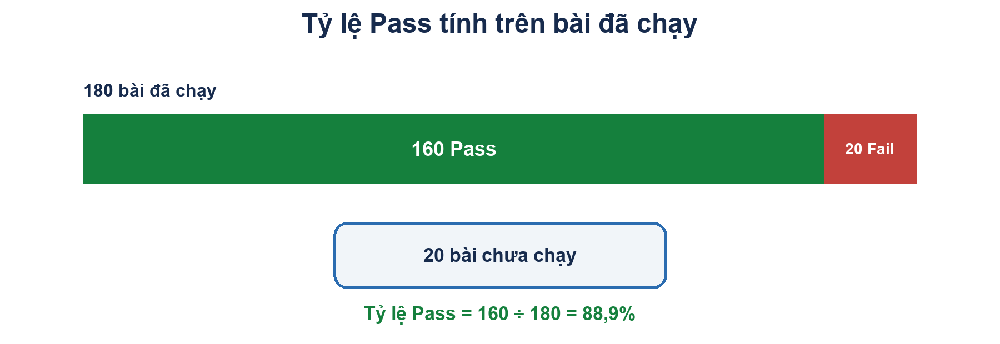 |
Câu 43: Nội dung QUAN TRỌNG NHẤT của một Test Summary Report đối với người quản lý là: A. Số lượng test case B. Danh sách tên tester C. Khuyến nghị phát hành hay chưa D. Thời gian chạy test |
Câu 44: Ước lượng công sức kiểm thử thường bị thiếu vì quên tính: A. Thời gian viết test case B. Thời gian chạy lại sau khi dev sửa bug C. Số lượng test case D. Số lượng tester |
Câu 45: Testware được lưu trữ sau khi dự án kết thúc nhằm mục đích chính là: A. Chứng minh tester đã làm việc B. Dùng lại làm bộ hồi quy cho các bản phát hành sau C. Nộp cho cơ quan thuế D. Đánh giá developer |
Câu 46: Kiểm thử tĩnh trực tiếp tìm ra: A. Failure B. Defect C. Error của người dùng D. Rủi ro dự án |
Câu 47: Đặc điểm phân biệt của hình thức Walkthrough là A. Có checklist bắt buộc B. Tác giả dẫn dắt buổi họp C. Trang trọng nhất D. Không cần chuẩn bị trước |
Câu 48: Hình thức xem xét TRANG TRỌNG NHẤT, có vai trò rõ ràng và tiêu chí vào/ra là A. Informal review B. Walkthrough C. Technical review D. Inspection |
Câu 49: Vai trò nào KHÔNG nên do tác giả đảm nhận trong buổi review? A. Người xem xét B. Người điều phối C. Thư ký D. Người tham dự |
Câu 50: Bước nào quyết định chất lượng của một buổi review? A. Họp thật lâu B. Chuẩn bị cá nhân – đọc tài liệu trước C. Mời thật nhiều người D. Ghi biên bản thật dài |
Câu 51: Miền hợp lệ của ô nhập tuổi là 18–60. Theo BVA 3 giá trị, số giá trị cần thử là: A. 2 B. 4 C. 6 D. 8 Đáp án đúng: C. BVA 3 giá trị lấy sát dưới, tại và sát trên mỗi biên: 17, 18, 19 và 59, 60, 61. Tổng cộng 6 giá trị. Minh họa 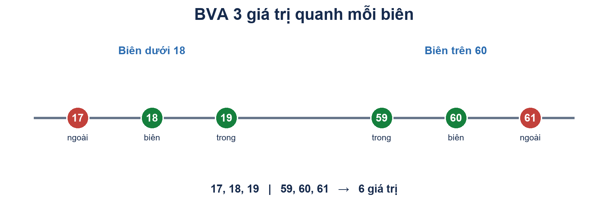 |
Câu 52: Theo BVA 2 giá trị với miền hợp lệ 1–25, các giá trị cần thử là: A. 1 và 25 B. 0, 1, 25, 26 C. 0 và 26 D. 1, 12, 25 Đáp án đúng: B. 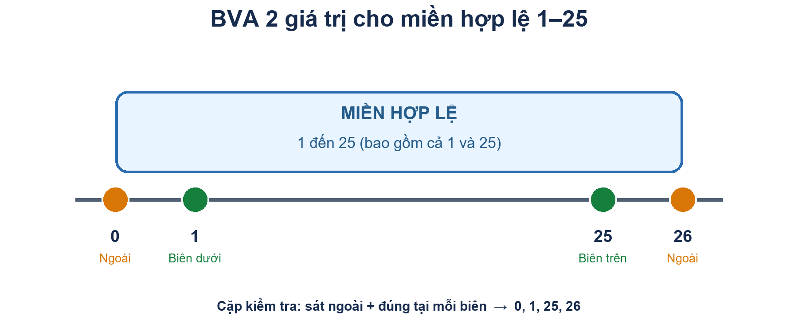 |
Câu 53: Kỹ thuật phân vùng tương đương dựa trên giả định: A. Mọi giá trị đều phải thử B. Các giá trị trong cùng phân vùng được xử lý giống nhau C. Lỗi chỉ ở biên D. Code luôn đúng ở giữa miền |
Câu 54: Điểm mù của phân vùng tương đương là: A. Không tìm được lỗi logic B. Không phát hiện lỗi tại giá trị biên C. Không dùng được cho số D. Cần đọc mã nguồn |
Câu 55: Kết quả phụ thuộc tổ hợp của 3 điều kiện nhị phân. Số tổ hợp tối đa là: A. 3 B. 6 C. 8 D. 9 Cách làm: Mỗi điều kiện nhị phân có 2 khả năng. Với 3 điều kiện: 2 × 2 × 2 = 2³ = 8 tổ hợp. |
Câu 56: Kỹ thuật phù hợp khi kết quả phụ thuộc TỔ HỢP nhiều điều kiện là: A. Phân vùng tương đương B. Giá trị biên C. Bảng quyết định D. Bao phủ câu lệnh |
Câu 57: Kỹ thuật phù hợp khi hành vi phụ thuộc TRẠNG THÁI HIỆN TẠI của hệ thống là: A. Bảng quyết định B. Kiểm thử chuyển trạng thái C. Phân vùng tương đương D. Bao phủ nhánh |
Câu 58: Trong kiểm thử chuyển trạng thái, loại chuyển nào HAY LỌT LỖI nhất? A. Chuyển hợp lệ B. Chuyển KHÔNG hợp lệ cần bị chặn C. Trạng thái bắt đầu D. Trạng thái kết thúc |
Câu 59: Câu lệnh if không có else thì có bao nhiêu nhánh? A. 0 B. 1 C. 2 D. 3 Cách làm: IF có hai kết quả của điều kiện: đúng thì vào thân IF; sai thì bỏ qua thân IF. Vì vậy có 2 nhánh. |
Câu 60: Phát biểu nào ĐÚNG? A. 100% bao phủ câu lệnh kéo theo 100% bao phủ nhánh B. 100% bao phủ nhánh kéo theo 100% bao phủ câu lệnh C. Hai loại bao phủ luôn bằng nhau D. Không liên quan gì nhau |
Câu 61: Kiểm thử tự động KHÔNG thay con người làm việc nào? A. Gõ phím và bấm chuột B. So sánh kết quả C. Thiết kế test case và chọn dữ liệu D. Chạy lặp lại nhiều lần |
Câu 62: Một script tự động KHÔNG có lệnh kiểm chứng (assertion) thì: A. Luôn Fail B. Luôn Pass, không chứng minh được gì C. Không chạy được D. Chạy nhanh hơn |
Câu 63: "Điểm hoà vốn" của tự động hoá là: A. Số test case tối thiểu B. Số lần chạy mà chi phí tự động bằng chi phí thủ công C. Tỷ lệ Pass 100% D. Số tester cần thiết |
Câu 64: Chạy tay 10 phút/lần; viết script 120 phút; mỗi lần chạy script tốn 3 phút. Điểm hoà vốn khoảng: A. 12 lần B. 18 lần C. 24 lần D. 40 lần Cách làm: Gọi n là số lần chạy. Chạy tay tốn 10n phút; tự động tốn 120 + 3n phút. Hòa vốn khi 10n = 120 + 3n, nên n = 120 ÷ 7 ≈ 17,14. Từ lần chạy thứ 18, tự động hóa bắt đầu tiết kiệm thời gian. |
Câu 65: Trường hợp nào NÊN tự động hoá nhất? A. Test chạy một lần duy nhất B. Test hồi quy chạy sau mỗi bản build C. Đánh giá thẩm mỹ giao diện D. Kiểm thử thăm dò |
Câu 66: Trường hợp nào KHÔNG nên tự động hoá? A. Smoke test B. Chức năng có giao diện đang thay đổi hằng ngày C. Test tính toán có kết quả xác định D. Test chạy với 200 bộ dữ liệu |
Câu 67: Chi phí LỚN NHẤT và hay bị quên nhất của kiểm thử tự động là: A. Mua bản quyền công cụ B. Bảo trì script khi ứng dụng thay đổi C. Tiền điện D. Đào tạo ban đầu |
Câu 68: Test lúc Pass lúc Fail dù mã nguồn không đổi được gọi là: A. Test hồi quy B. Test không ổn định (flaky test) C. Test khói D. Test tải |
Câu 69: Cách xử lý ĐÚNG khi trang cần thời gian tải trước khi kiểm chứng: A. Dùng lệnh ngủ cố định 5 giây B. Dùng chờ tường minh đợi phần tử xuất hiện C. Chạy lại script nhiều lần D. Bỏ qua bước kiểm chứng |
Câu 70: Theo kim tự tháp kiểm thử, nên tự động hoá NHIỀU NHẤT ở tầng: A. Giao diện B. API C. Đơn vị D. Chấp nhận |
Câu 71: Kiểm thử hướng dữ liệu (data-driven testing) nghĩa là: A. Chỉ test cơ sở dữ liệu B. Tách dữ liệu ra ngoài, một script chạy với nhiều bộ dữ liệu C. Test bằng dữ liệu thật của khách hàng D. Tự sinh dữ liệu ngẫu nhiên |
Câu 72: Nguyên tắc quan trọng để chạy test song song là các test phải: A. Chạy đúng thứ tự B. Độc lập và tự chuẩn bị dữ liệu của mình C. Dùng chung một tài khoản D. Viết bằng cùng ngôn ngữ |
Câu 73: Tiêu chí QUAN TRỌNG NHẤT khi chọn công cụ tự động hoá cho một nhóm là: A. Công cụ nổi tiếng nhất B. Phù hợp loại ứng dụng và kỹ năng hiện có của nhóm C. Công cụ đắt nhất D. Công cụ mới ra gần đây |
Câu 74: Bước nào trong vòng đời tự động hoá hay bị bỏ qua nhất, dẫn tới dự án thất bại? A. Viết script B. Chọn công cụ C. Phân tích khả thi và bảo trì D. Chạy thử |
Câu 75: Lợi ích nào của tự động hoá KHÔNG thể thay thế bằng test tay? A. Tìm lỗi giao diện B. Mô phỏng 1.000 người dùng đồng thời C. Đánh giá trải nghiệm người dùng D. Kiểm thử thăm dò |
Câu 76: Selenium là công cụ tự động hoá dành cho: A. Ứng dụng desktop B. Trình duyệt web C. Ứng dụng Android D. Kiểm thử API |
Câu 77: Thành phần nào của Selenium dùng để GHI và PHÁT LẠI thao tác, không cần lập trình? A. WebDriver B. Selenium IDE C. Selenium Grid D. Selenium RC |
Câu 78: Thành phần nào dùng để chạy test SONG SONG trên nhiều máy, nhiều trình duyệt? A. Selenium IDE B. WebDriver C. Selenium Grid D. Selenium RC |
Câu 79: Trong kiến trúc Selenium Grid, thành phần nhận yêu cầu và phân phối công việc là: A. Node B. Hub C. Driver D. Browser |
Câu 80: Locator NÊN ƯU TIÊN dùng nhất là: A. XPath tuyệt đối B. ClassName C. Id D. TagName |
Câu 81: Vì sao KHÔNG nên dùng XPath tuyệt đối dạng /html/body/div[3]/div[2]/input[1]? A. Viết dài dòng B. Gãy ngay khi cấu trúc HTML thay đổi dù chức năng không đổi C. Không chạy được trên Chrome D. Chậm hơn Id 100 lần |
Câu 82: Vì sao không nên định vị phần tử theo ClassName? A. Selenium không hỗ trợ B. Class dùng cho trình bày nên hay đổi và thường không duy nhất C. Class chỉ có ở thẻ div D. Class chạy chậm nhất |
Câu 83: Khác biệt giữa Assert và Verify là: A. Assert nhanh hơn B. Assert dừng kịch bản khi sai, Verify ghi nhận rồi chạy tiếp C. Verify dừng kịch bản khi sai D. Không khác nhau |
Câu 84: Ô nhập đang có sẵn chữ "abc", script gọi SendKeys("sv001"). Kết quả trong ô là: A. sv001 B. abc C. abcsv001 D. Lỗi |
Câu 85: driver.Close() khác driver.Quit() ở chỗ: A. Close đóng tất cả cửa sổ B. Quit chỉ đóng cửa sổ hiện tại C. Close đóng cửa sổ hiện tại, Quit đóng tất cả và kết thúc phiên D. Không khác nhau |
Câu 86: Lỗi StaleElementReferenceException thường xảy ra khi: A. Locator viết sai B. Dùng lại biến phần tử sau khi trang đã tải lại C. Trình duyệt quá cũ D. Quên gọi Clear() |
Câu 87: Phần tử nhìn thấy rõ trên màn hình nhưng Selenium báo không tìm thấy. Nguyên nhân có thể là: A. Trình duyệt bị lỗi B. Phần tử nằm trong iframe mà chưa chuyển vào iframe C. Máy tính thiếu RAM D. Chưa cài driver |
Câu 88: Lệnh kiểm chứng (assertion) trong kiểm thử tự động do đâu cung cấp? A. Selenium WebDriver B. Thư viện kiểm thử như NUnit, JUnit, pytest C. Trình duyệt D. Hệ điều hành |
Câu 89: Một kịch bản kiểm thử tự động hoàn chỉnh gồm bốn khối theo thứ tự: A. Hành động – Chuẩn bị – Dọn dẹp – Kiểm chứng B. Chuẩn bị – Hành động – Kiểm chứng – Dọn dẹp C. Kiểm chứng – Chuẩn bị – Hành động – Dọn dẹp D. Chuẩn bị – Kiểm chứng – Hành động – Dọn dẹp |
Câu 90: Mẫu thiết kế Page Object Model giúp giải quyết vấn đề: A. Test chạy chậm B. Phải sửa nhiều script khi giao diện thay đổi C. Không đọc được file Excel D. Không chạy song song được |
Câu 91: Một nhóm tiếp tục chạy cùng một bộ test nhưng dần ít phát hiện lỗi mới. Cách xử lý nào phù hợp với nguyên tắc hiệu quả của kiểm thử? A. Bổ sung và sửa đổi ca kiểm thử theo các rủi ro, lỗi đã học được B. Ngừng kiểm thử ngay C. Chỉ tăng số lần chạy y hệt D. Kết luận sản phẩm không thể có defect |
Câu 92: Hoạt động nào đi xa hơn việc ghi nhận triệu chứng failure để ngăn lỗi tương tự lặp lại? A. Ghi thêm tên người chạy test B. Phân tích nguyên nhân gốc và cải thiện quy trình tạo yêu cầu C. Tăng mức ưu tiên lỗi D. Chụp lại màn hình lỗi |
Câu 93: Kiểm thử response time khi số người dùng đồng thời tăng đánh giá chủ yếu khía cạnh nào? A. Mức phù hợp của giao diện B. Đặc tính phi chức năng về hiệu năng C. Khả năng bảo trì mã nguồn D. Tính đúng của từng unit riêng lẻ |
Câu 94: CI chạy bộ kiểm thử tự động sau mỗi thay đổi mã chủ yếu đem lại lợi ích nào? A. Loại bỏ nhu cầu thiết kế test B. Cung cấp phản hồi sớm về hồi quy do thay đổi C. Đảm bảo tuyệt đối không còn lỗi D. Thay thế kiểm thử chấp nhận |
Câu 95: Khi ưu tiên kiểm thử theo rủi ro sản phẩm, nhóm thường kết hợp hai yếu tố nào? A. Xác suất xảy ra vấn đề và mức tác động nếu xảy ra B. Kích thước màn hình và số lượng tester C. Số test case và thời gian họp D. Giá công cụ và ngôn ngữ lập trình |
Câu 96: Một Test Summary Report hữu ích nên hỗ trợ quyết định nào? A. Có nên phát hành khi xét kết quả và rủi ro còn lại B. Ai viết nhiều dòng code nhất C. Màu sắc giao diện có đẹp không D. Test tool nào nổi tiếng nhất |
Câu 97: Tài liệu yêu cầu được đọc để tìm điểm thiếu, mâu thuẫn trước khi chạy phần mềm là hoạt động gì? A. Kiểm thử tĩnh B. Kiểm thử tải C. Kiểm thử hồi quy D. Kiểm thử chấp nhận vận hành |
Câu 98: Review chính thức có quy trình, vai trò, tiêu chí và người điều phối được gọi phổ biến là gì? A. Ad hoc review B. Inspection C. Exploratory testing D. Pairwise testing |
Câu 99: Rủi ro nào thường gặp khi đưa tự động hóa kiểm thử vào dự án? A. Đánh giá thiếu công sức bảo trì bộ script B. Không thể chạy kiểm thử lặp lại C. Không thể đưa test vào CI D. Kết quả luôn phụ thuộc cảm nhận người chạy |
Câu 100: Khi đưa kiểm thử tự động vào CI, lợi ích chính là gì? A. Phản hồi nhanh và lặp lại được sau mỗi thay đổi B. Không còn cần test oracle C. Không cần bảo trì script D. Không cần kiểm thử thủ công khám phá |
Câu 101: Page Object Model nên gom những thành phần nào của một trang? A. Locator và các thao tác của trang B. Mọi quyết định phát hành C. Chỉ dữ liệu đầu vào của toàn bộ dự án D. Cấu hình máy chủ CI |
Câu 102: Page Object method thực hiện navigation sang trang Dashboard thường nên trả về gì? A. DashboardPage B. boolean bắt buộc C. WebElement D. void bắt buộc |
Câu 103: Ở cấp độ kiểm thử hệ thống, đối tượng được kiểm thử chủ yếu là gì? A. Một hàm hoặc lớp riêng lẻ B. Giao diện giữa hai module C. Toàn bộ hệ thống tích hợp so với yêu cầu hệ thống D. Mức phù hợp với nhu cầu người dùng cuối בלבד |
Câu 104: Kiểm thử hồi quy được phân loại phù hợp nhất là gì? A. Một cấp độ kiểm thử B. Một loại kiểm thử liên quan đến thay đổi C. Một mô hình phát triển D. Một kỹ thuật review tĩnh |
Câu 105: Trong Scrum, buổi retrospective cuối iteration có ích gì cho hoạt động kiểm thử? A. Thay thế việc theo dõi tiến độ trong iteration B. Chốt chắc chắn rằng sản phẩm không còn lỗi C. Thống nhất hành động cải tiến quy trình cho iteration sau D. Thay cuộc review work product |
Câu 106: Test monitoring và test control khác nhau thế nào? A. Monitoring thu thập thông tin tiến độ; control dùng thông tin đó để điều chỉnh B. Monitoring sửa lỗi; control viết test case C. Monitoring chỉ làm trước dự án; control chỉ làm sau phát hành D. Hai thuật ngữ cùng chỉ việc thực thi test |
Câu 107: Chỉ số nào phù hợp để đưa vào báo cáo tiến độ kiểm thử? A. Số test case đã chạy, pass, fail và bị chặn B. Lương cá nhân của từng thành viên C. Thương hiệu máy tính của tester D. Ngân sách quảng cáo sản phẩm |
Câu 108: Rủi ro thiếu tester chủ chốt trước khi hoàn tất giai đoạn test thuộc loại nào? A. Rủi ro sản phẩm về hiệu năng B. Rủi ro dự án về nhân sự C. Lỗi chức năng của sản phẩm D. Rủi ro bảo mật |
Câu 109: Điểm khác nhau cốt lõi giữa kiểm thử tĩnh và kiểm thử động là gì? A. Tĩnh kiểm tra work product không chạy phần mềm; động thực thi phần mềm B. Tĩnh chỉ do máy thực hiện; động chỉ do người thực hiện C. Tĩnh chỉ áp dụng cho mã nguồn; động chỉ áp dụng cho yêu cầu D. Tĩnh tìm failure; động chỉ tìm defect |
Câu 110: Công cụ phân tích tĩnh thường có thể phát hiện vấn đề nào mà không cần chạy chương trình? A. Biến được dùng trước khi gán giá trị B. Thời gian phản hồi khi có 1.000 người dùng C. Người dùng không thích quy trình nghiệp vụ D. Rò rỉ bộ nhớ chỉ xuất hiện sau nhiều giờ chạy |
Câu 111: Một nhóm chọn test dựa trên các luồng chính, luồng thay thế và ngoại lệ của tương tác người dùng với hệ thống. Đây là kỹ thuật nào? A. Kiểm thử use case B. Bao phủ câu lệnh C. Phân tích giá trị biên D. Phân tích tĩnh |
Câu 112: Kiểm thử hộp trắng dựa chủ yếu vào thông tin nào? A. Cấu trúc bên trong và luồng điều khiển của mã B. Chỉ yêu cầu nghiệp vụ bên ngoài C. Cảm nhận chủ quan của người dùng D. Bố cục trực quan của màn hình |
Câu 113: Nút đã có trong DOM nhưng tạm thời bị vô hiệu hóa sau khi trang tải. Nên chờ điều kiện nào trước khi bấm? A. elementToBeClickable B. presenceOfElementLocated C. Thread.sleep cố định 10 giây D. titleContains |
Câu 114: WebDriver cần thao tác với ô nhập nằm bên trong iframe. Việc nào cần làm trước? A. Chuyển context bằng switchTo().frame(...) B. Tăng implicit wait lên 60 giây C. Đổi locator từ id sang class D. Khởi động lại browser |
Câu 115: Một liên kết mở tab mới. Trước khi tìm phần tử trong tab đó, WebDriver cần làm gì? A. Chuyển sang window handle của tab mới B. Gọi refresh trên tab cũ C. Đóng tab cũ bằng close() D. Tạo lại toàn bộ test suite |
Câu 116: Một quy tắc đăng ký học phần có 4 điều kiện Boolean độc lập. Nếu liệt kê đầy đủ mọi tổ hợp điều kiện trước khi rút gọn các quy tắc không cần thiết, tối đa có bao nhiêu quy tắc? A. 4 B. 8 C. 16 D. 24 Cách làm: Mỗi một trong 4 điều kiện Boolean có 2 khả năng. Số tổ hợp tối đa là 2⁴ = 16. |
Câu 117: Bảng quyết định ghi dấu “–” tại một điều kiện trong một quy tắc. Cách hiểu đúng là gì? A. Điều kiện đó không ảnh hưởng đến hành động của quy tắc B. Tổ hợp này chắc chắn không thể xảy ra C. Điều kiện đó luôn sai D. Quy tắc đó không cần test Đáp án đúng: A. Trong bảng quyết định, dấu “–” ở một điều kiện nghĩa là giá trị điều kiện đó không làm thay đổi hành động của quy tắc; không có nghĩa điều kiện không thể xảy ra. Minh họa 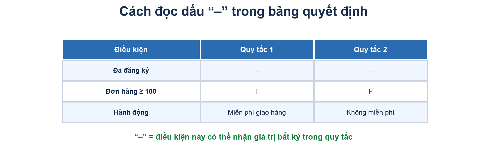 |
Câu 118: Dựa vào bảng quyết định trong hình: khách hàng không đăng ký nhưng đặt đơn hàng trị giá $150. Hành động nào được áp dụng? 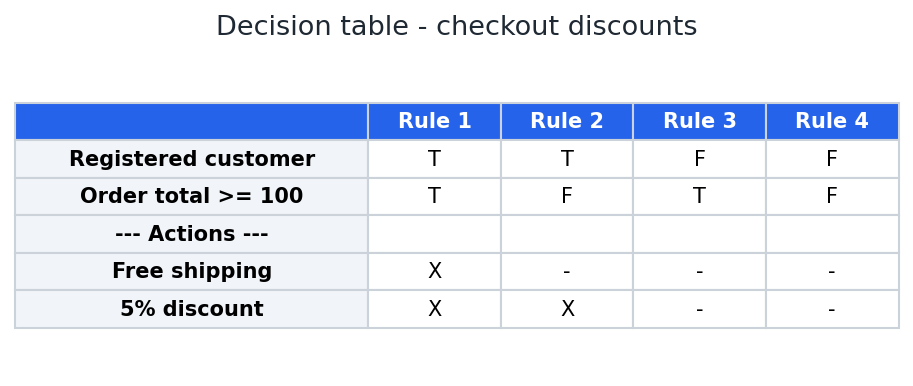 A. Không miễn phí giao hàng và không giảm giá B. Miễn phí giao hàng và giảm giá 5% C. Chỉ giảm giá 5% D. Chỉ miễn phí giao hàng Cách nhìn bảng: “không đăng ký” là Registered = F; đơn hàng $150 cho Order total ≥ 100 = T. Đây là Quy tắc 3 (F, T); hai hành động đều là “–”, nên không miễn phí giao hàng và không giảm giá. Đáp án đúng: A. |
Câu 119: Ô nhập tín chỉ nhận số nguyên từ 1 đến 25. Theo BVA 3 giá trị tại biên dưới, bộ nào cần kiểm tra? A. 0, 1, 2 B. 1, 2, 3 C. 0, 1, 25 D. 1, 25, 26 Đáp án đúng: A. Ở biên dưới 1, BVA 3 giá trị chọn sát dưới, tại biên và sát trên: 0, 1, 2. Minh họa 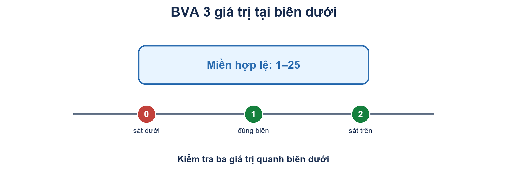 |
Câu 120: Một trường nhận số nguyên từ 1 đến 25. Theo EP, bộ đại diện tối thiểu cho ba vùng chính nào hợp lý nhất? A. 0, 15, 26 B. 1, 2, 25 C. 0, 1, 26 D. 10, 15, 20 Đáp án đúng: A. Cách nhìn hình: lấy đúng một số từ mỗi lớp — 0 từ lớp thấp không hợp lệ, 15 từ lớp hợp lệ, 26 từ lớp cao không hợp lệ. Minh họa 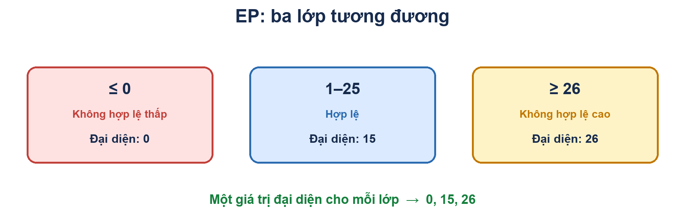 |
Câu 121: Một trường số cho phép giá trị từ 1 đến 25. Vì sao chỉ kiểm tra 10 là chưa đủ để đánh giá đúng các ranh giới? A. Vì cần kiểm tra sát dưới, đúng tại và sát trên mỗi biên B. Vì EP chỉ dùng cho chuỗi ký tự C. Vì BVA cần biết mã nguồn D. Vì giá trị giữa miền luôn không hợp lệ Đáp án đúng: A. Giá trị 10 nằm giữa miền. BVA cần kiểm tra quanh hai biên: 0, 1, 2 và 24, 25, 26 để phát hiện lỗi lệch biên. Minh họa 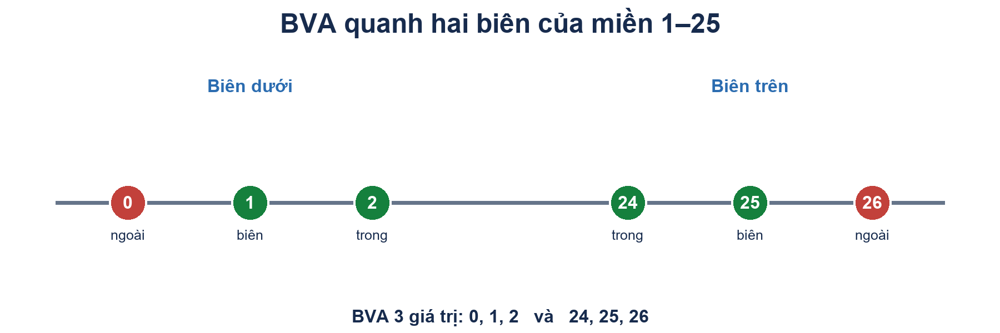 |
Câu 122: Theo sơ đồ chuyển trạng thái trong hình, hệ thống chuyển tài khoản sang trạng thái bị khóa sau tình huống nào? 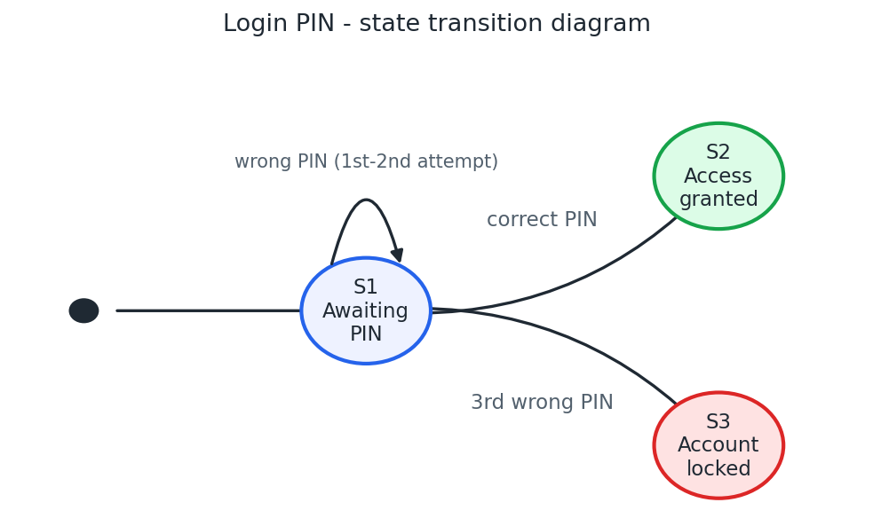 A. Một lần nhập sai PIN B. Một lần nhập đúng PIN C. Ba lần nhập sai PIN liên tiếp D. Hai lần nhập sai rồi nhập đúng PIN Cách nhìn sơ đồ: mũi tên từ S1 đến S3 “Account locked” ghi “3rd wrong PIN”. Tài khoản bị khóa sau ba lần nhập sai PIN liên tiếp. Đáp án đúng: C. |
Câu 123: Một mô hình có 6 trạng thái và 9 chuyển tiếp hợp lệ. Nếu tập test thăm đủ cả 6 trạng thái nhưng bỏ qua một chuyển tiếp, tiêu chí nào chưa đạt? A. Bao phủ tất cả trạng thái B. Bao phủ tất cả chuyển tiếp hợp lệ (0-switch) C. Bao phủ câu lệnh D. Bao phủ phân vùng tương đương Đáp án đúng: B. Bao phủ đủ 6 trạng thái chưa đủ khi còn thiếu một chuyển tiếp; tiêu chí chưa đạt là bao phủ toàn bộ chuyển tiếp hợp lệ. Minh họa 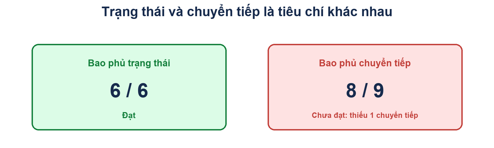 |
Câu 124: Trong kiểm thử chuyển trạng thái, vì sao cần thử cả chuyển tiếp không hợp lệ? A. Để xác nhận thao tác sai bị từ chối an toàn và trạng thái không bị đổi sai B. Để bảo đảm mọi trạng thái đều bị bỏ qua C. Để thay thế kiểm thử chuyển tiếp hợp lệ D. Để đo tốc độ phản hồi |
Câu 125: Một đoạn mã có 6 câu lệnh thực thi được. Tập test chạy qua 4 câu lệnh. Statement coverage là bao nhiêu? A. 33,3% B. 50% C. 66,7% D. 75% Đáp án đúng: C. Statement coverage = câu lệnh đã chạy ÷ tổng câu lệnh thực thi được × 100 = 4 ÷ 6 × 100 = 66,7%. Minh họa 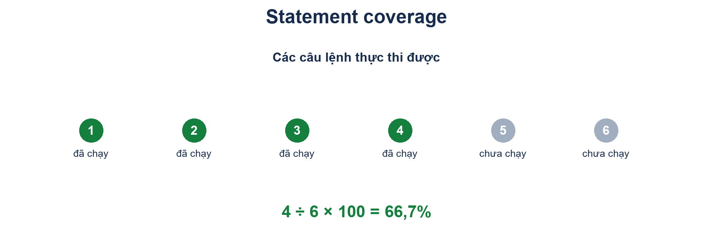 |
Câu 126: Một quyết định if có hai nhánh True/False. Bộ test chỉ chạy nhánh True nhưng đã thực thi mọi câu lệnh trong thân if và sau if. Kết luận nào đúng? A. Có thể đạt 100% statement coverage nhưng chưa đạt 100% branch coverage B. Chắc chắn đạt 100% branch coverage C. Không thể đạt statement coverage nào D. Branch coverage không áp dụng cho if Đáp án đúng: A. Có thể chạy hết câu lệnh trên nhánh True, nên statement coverage có thể đạt 100%; nhưng mới chạy 1/2 nhánh, branch coverage chỉ 50%. Minh họa 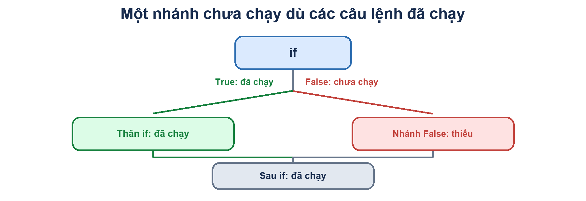 |
Câu 127: Một chương trình có hai quyết định, mỗi quyết định gồm nhánh True và False. Tổng số nhánh cần bao phủ để đạt 100% branch coverage là bao nhiêu? A. 2 B. 3 C. 4 D. 8 Đáp án đúng: C. Có 2 quyết định, mỗi quyết định có 2 nhánh (True và False), nên tổng số nhánh là 2 × 2 = 4. Minh họa 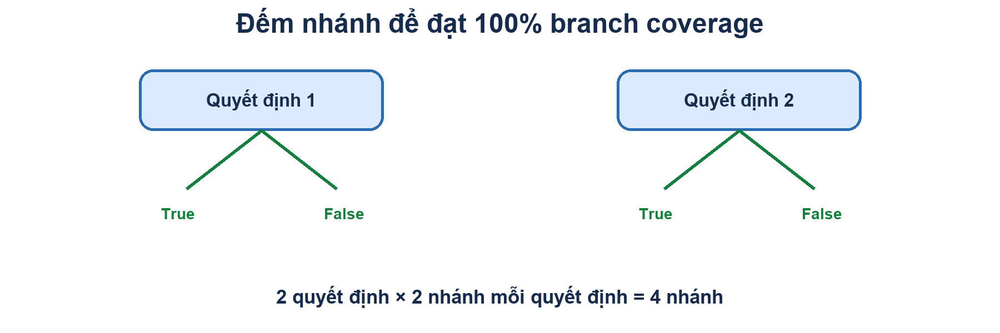 |
Câu 128: Dựa vào lưu đồ điều khiển trong hình, cần tối thiểu bao nhiêu test case để đạt 100% branch coverage, tức mỗi quyết định đi theo cả hai nhánh? 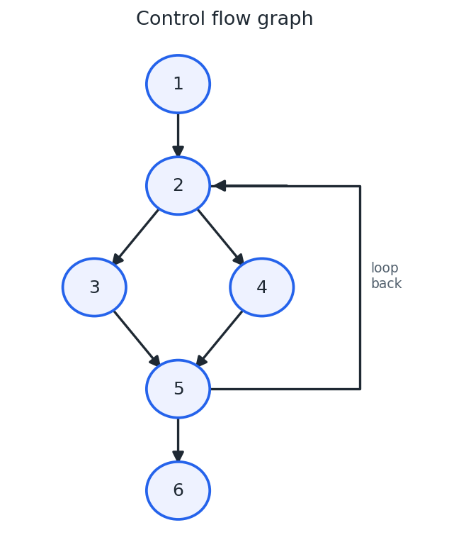 A. 2 B. 1 C. 4 D. 6 Đáp án đúng: A. Cách nhìn lưu đồ: cần đi qua cả hai cạnh ra khỏi nút 2 (2→3 và 2→4), cùng nhánh lặp và nhánh thoát ở nút 5 (5→2 và 5→6). Hai đường chạy phù hợp bao phủ đủ các nhánh. |
Câu 129: Vì sao 100% statement coverage không đảm bảo 100% branch coverage? A. Có thể chạy mọi câu lệnh nhưng chưa thực hiện cả hai kết quả của một quyết định B. Statement coverage luôn mạnh hơn branch coverage C. Mỗi câu lệnh có vô hạn nhánh D. Branch coverage chỉ đo số dòng code |
Câu 130: Một bộ test đạt 100% statement coverage và 100% branch coverage. Kết luận nào là chính xác nhất? A. Mọi mã đã được thực thi theo các nhánh đo được, nhưng vẫn chưa chứng minh phần mềm không còn lỗi B. Phần mềm chắc chắn đáp ứng mọi nhu cầu C. Không cần kiểm thử hộp đen nữa D. Mọi tổ hợp dữ liệu đầu vào đã được chạy |
Quiz chương 1–6
Câu 1: Cho bảng chuyển đổi trạng thái sau. Trường hợp kiểm thử nào dưới đây sẽ bao phủ chuỗi chuyển đổi trạng thái sau? S1 SO S1 S2 SO
Triển lãm:
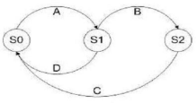
A. D, A, B, C.
B. A, B, C, D.
C. D, A, B.
D. A, B, C.
Câu 2: Từ góc độ kiểm thử, mục đích CHÍNH của Quản lý cấu hình là gì? i) Xác định phiên bản phần mềm đang được kiểm thử. ii) Kiểm soát phiên bản của các mục phần mềm kiểm thử. iii) Phát triển các mục phần mềm kiểm thử mới. iv) Theo dõi các thay đổi đối với các mục phần mềm kiểm thử. v) Phân tích nhu cầu về các mục phần mềm kiểm thử mới. A. ii, iv và v. B. ii, iii và iv.i, C. i, ii và iv. D. i, iii và v. |
Câu 3: Nhiệm vụ nào sau đây là nhiệm vụ CHÍNH của việc lập kế hoạch kiểm thử? A. Lên lịch phân tích và thiết kế thử nghiệm. B. Khởi xướng các biện pháp khắc phục. C. Giám sát tiến độ và phạm vi kiểm thử. D. Đo lường và phân tích kết quả. |
Câu 4: Phát biểu nào sau đây mô tả chính xác nhất sự khác biệt giữa việc kiểm tra và việc đi khảo sát thực địa? A. Cả việc kiểm tra và khảo sát đều do tác giả thực hiện. B. Việc kiểm tra được thực hiện bởi người điều phối, còn việc hướng dẫn thực hành được thực hiện bởi tác giả. C. Cả việc kiểm tra và hướng dẫn thực hành đều do người điều phối được đào tạo hướng dẫn. D. Hướng dẫn thực hành do tác giả thực hiện. Tác giả không có mặt trong quá trình kiểm tra. |
Câu 5: Việc kiểm thử chức năng có thể được thực hiện ở đâu? A. Chỉ áp dụng ở cấp độ kiểm thử hệ thống và kiểm thử nghiệm thu. B. Ở tất cả các cấp độ kiểm tra. C. Ở tất cả các cấp độ cao hơn kiểm thử tích hợp. D. Chỉ ở cấp độ kiểm thử nghiệm thu. |
Câu 6: Mục tiêu CHÍNH khi đánh giá sản phẩm phần mềm là gì? A. Xác định các lỗi tiềm ẩn của ứng dụng bằng cách sử dụng đặc tả kiểm thử. B. Xác định các khiếm khuyết trong bất kỳ sản phẩm phần mềm nào. C. Xác định lỗi chính tả trong bản đặc tả yêu cầu. D. Xác định những điểm không nhất quán về tiêu chuẩn trong bộ quy tắc. |
Câu 7: Ai THƯỜNG thực hiện các hoạt động gỡ lỗi? A. Các nhà phát triển. B. Các nhà phân tích. C. Người kiểm thử. D. Quản lý sự cố. |
Câu 8: Mục nào sau đây bạn thường KHÔNG thấy trong báo cáo sự cố phần mềm? A. Tên và/hoặc chức vụ của người nêu vấn đề. B. Phiên bản phần mềm đang được kiểm thử. C. Các đề xuất về cách khắc phục vấn đề. D. Kết quả thực tế và kết quả dự kiến. |
Câu 9: Phát biểu nào sau đây mô tả kết quả mong đợi của một bài kiểm tra? A. Test case specification. B. Test design specification. C. Test procedure specification. D. Test results. |
Câu 10: Một số công cụ được thiết kế chủ yếu dành cho nhà phát triển. Trong số 5 công cụ được liệt kê, phát biểu nào mô tả rõ nhất những công cụ dành cho nhà phát triển? i) Công cụ kiểm thử hiệu năng. ii) Công cụ đo lường phạm vi phủ sóng. iii) Các yếu tố so sánh thử nghiệm. iv) Công cụ phân tích động. v) Công cụ quản lý sự cố. A. i, iii và iv phù hợp hơn cho các nhà phát triển. B. Các mục ii và iv phù hợp hơn với nhà phát triển. C. Các mục ii, iii và iv phù hợp hơn với nhà phát triển. D. Các mục ii và iii phù hợp hơn với nhà phát triển. |
Câu 11: Phát biểu nào sau đây là đúng? A. Phân tích tác động đánh giá ảnh hưởng của một lỗi được phát hiện trong quá trình kiểm thử hồi quy lên hệ thống. B. Phân tích tác động đánh giá ảnh hưởng của việc một người mới gia nhập nhóm kiểm thử hồi quy. C. Phân tích tác động đánh giá xem lỗi được phát hiện trong quá trình kiểm thử hồi quy đã được khắc phục chính xác hay chưa. D. Phân tích tác động đánh giá ảnh hưởng của một thay đổi đối với hệ thống để xác định cần thực hiện bao nhiêu thử nghiệm hồi quy. |
Câu 12: Tiêu chí thoát được xác định trong quy trình kiểm thử nào? A. Lập kế hoạch kiểm thử. B. Đánh giá các tiêu chí rút lui và báo cáo. C. Kết thúc thử nghiệm. D. Kiểm soát thử nghiệm. |
Câu 13: Cho sơ đồ chuyển trạng thái sau. Chuỗi chuyển trạng thái nào sau đây chứa một chuyển trạng thái KHÔNG HỢP LỆ, điều này có thể cho thấy lỗi trong thiết kế hệ thống?
Triển lãm:
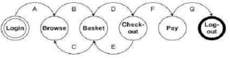
A. Login Browse Basket Checkout Basket Checkout Pay Logout.
B. Login Browse Basket Checkout Pay Logout.
C. Login Browse Basket Checkout Basket Logout.
D. Login Browse Basket Browse Basket Checkout Pay Logout.
Câu 14: Nhiệm vụ nào sau đây là nhiệm vụ CHÍNH của việc triển khai và thực thi kiểm thử? A. Đo lường và phân tích kết quả. B. Báo cáo các sai lệch như những sự cố. C. Xác định các điều kiện thử nghiệm hoặc yêu cầu thử nghiệm. D. Đánh giá xem có cần thực hiện thêm xét nghiệm nào nữa không. |
Câu 15: Thử nghiệm beta là gì? A. Khách hàng tiềm năng tiến hành thử nghiệm tại địa điểm của nhà phát triển. B. Khách hàng tiềm năng tiến hành thử nghiệm tại địa điểm của chính họ. C. Nhà phát triển sản phẩm tiến hành thử nghiệm tại địa điểm của khách hàng. D. Nhà phát triển sản phẩm tiến hành thử nghiệm tại địa điểm của chính họ. |
Câu 16: Với đoạn mã sau, cần bao nhiêu bài kiểm tra để đạt được độ phủ quyết định 100%? if width > length then biggest_dimension = width if height > width then biggest_dimension = height end_if else biggest_dimension = length if height > length then biggest_dimension = height end_if end_if A. 3 B. 4 C. 2 D. 1 |
Câu 17: Bạn đã thiết kế các trường hợp kiểm thử để đạt được độ phủ câu lệnh 100% và độ phủ quyết định 100% cho đoạn mã sau. if width > length then biggest_dimension = width else biggest_dimension = length end_if Đoạn mã sau đã được thêm vào cuối đoạn mã phía trên. print "Biggest dimension is " & biggest_dimension print "Width: " & width print "Length: " & length Cần thêm bao nhiêu trường hợp thử nghiệm nữa? A. Cần thêm một trường hợp kiểm thử nữa để đạt được độ bao phủ quyết định 100%. B. Cần thêm hai trường hợp kiểm thử nữa để đạt được độ phủ câu lệnh 100%, trong đó một trường hợp sẽ được sử dụng để đảm bảo độ phủ quyết định 100%. C. Không có, có thể sử dụng các trường hợp kiểm thử hiện có. D. Cần thêm một trường hợp kiểm thử nữa để đạt được độ phủ câu lệnh 100%. |
Câu 18: Một nhiệt kế chỉ đo nhiệt độ theo độ nguyên. Nếu nhiệt độ giảm xuống dưới 18 độ, hệ thống sưởi sẽ tắt. Nó sẽ được bật lại khi nhiệt độ đạt đến 21 độ. Giá trị nào là tối ưu nhất (tính bằng độ) để bao phủ tất cả các khoảng nhiệt độ tương đương? A. 15, 19 và 25. B. 17, 18 và 19. C. 18, 20 và 22. D. 16, 26 và 32. |
Câu 19: Hoạt động nào trong quy trình kiểm thử cơ bản tạo ra các bộ kiểm thử để thực hiện kiểm thử hiệu quả? A. Lập kế hoạch và thực thi. B. Lập kế hoạch và kiểm soát. C. Phân tích và thiết kế. D. Kết thúc thử nghiệm. |
Câu 20: Phát biểu nào sau đây là ĐÚNG? A. Kiểm thử xác nhận là kiểm tra các bản vá lỗi cho một tập hợp các khiếm khuyết, còn kiểm thử hồi quy là kiểm tra để xác định xem có khiếm khuyết nào được đưa vào do các thay đổi hay không. B. Kiểm thử xác nhận là kiểm thử để xác định xem có bất kỳ lỗi nào được đưa vào do các thay đổi hay không, còn kiểm thử hồi quy là kiểm thử việc sửa chữa một tập hợp các lỗi. C. Kiểm thử xác nhận và kiểm thử hồi quy đều là các thử nghiệm để xác định xem có bất kỳ lỗi nào phát sinh do những thay đổi hay không. D. Kiểm thử xác nhận và kiểm thử hồi quy đều là các bước kiểm thử nhằm khắc phục một tập hợp các lỗi. |
|
Câu 21: Cho bảng quyết định sau: Trường hợp kiểm thử và kết quả mong đợi nào sau đây là HỢP LỆ?
| Quy tắc 1 | Quy tắc 2 | Quy tắc 3 | Quy tắc 4 | |
| Điều kiện | ||||
| Tuổi | <21 năm |
21-29 tuổi | 30-50 tuổi | > 50 năm |
Bảo hiểm Lớp học |
MỘT | A hoặc B | B. C hoặc D | C hoặc D |
| Hành động | ||||
| Phần thưởng | 100 bảng Anh | 90 bảng Anh | 70 bảng Anh | 70 bảng Anh |
| Thặng dư | 2.500 bảng Anh | 2.500 bảng Anh | 500 bảng Anh | 1000 bảng Anh |
A. Người 23 tuổi, thuộc nhóm bảo hiểm A, phí bảo hiểm là 0 và mức khấu trừ là 500.
B. Người 51 tuổi, thuộc nhóm bảo hiểm C, phí bảo hiểm là 0 và mức khấu trừ là 00.
C. Người 31 tuổi, thuộc nhóm bảo hiểm B, phí bảo hiểm là 0 và mức khấu trừ là 500.
D. Người 43 tuổi, thuộc nhóm bảo hiểm C, phí bảo hiểm là 0 và mức khấu trừ là 000.
Câu 22: Khi nào cần triển khai các quy trình quản lý cấu hình? A. Trong giai đoạn lập kế hoạch kiểm thử. B. Trong quá trình phân tích kết quả thử nghiệm. C. Trong quá trình thực thi kiểm thử. D. Khi đánh giá các tiêu chí thoát |
Câu 23: Đặc điểm nào sau đây là đặc trưng của kiểm thử hồi quy? i) Kiểm thử hồi quy CHỈ được thực hiện MỘT LẦN ii) Kiểm thử hồi quy được sử dụng sau khi các lỗi đã được khắc phục. iii) Kiểm thử hồi quy thường được tự động hóa. iv) Không cần duy trì các bài kiểm tra hồi quy. Tùy chọn: A. Vâng, iv. B. Vâng, iii. C. i, iii, iv. D. iii. |
Câu 24: Một nhà bán buôn bán hộp mực máy in. Số lượng đặt hàng tối thiểu là 5. Có chiết khấu 20% cho đơn hàng từ 100 hộp mực máy in trở lên. Bạn được yêu cầu chuẩn bị các trường hợp thử nghiệm sử dụng các giá trị khác nhau cho số lượng hộp mực máy in được đặt hàng. Nhóm nào sau đây chứa ba đầu vào thử nghiệm sẽ được tạo ra bằng cách sử dụng Phân tích Giá trị Biên? A. 5, 6, 20 B. 4, 5, 80 C. 4, 5, 99 D. 1, 20, 100 |
Câu 25: Những hoạt động nào sau đây nên được thực hiện trong quá trình lựa chọn và triển khai công cụ kiểm thử? i) Điều tra quy trình kiểm thử của tổ chức. ii) Tiến hành thử nghiệm chứng minh tính khả thi. iii) Triển khai công cụ đã chọn vào một dự án đang chậm tiến độ để tiết kiệm thời gian. iv) Xác định các yêu cầu về huấn luyện và hướng dẫn sử dụng công cụ đã chọn. Tùy chọn: A. i, ii, iii. B. Có, iii, iv. C. i, iii, iv. D. i, ii, iv. |
Câu 26: Lợi ích CHÍNH của việc thiết kế các bài kiểm tra ngay từ giai đoạn đầu của vòng đời sản phẩm là gì? A. Phương pháp này rẻ hơn so với việc thiết kế các bài kiểm tra trong giai đoạn thử nghiệm. B. Nó giúp ngăn ngừa việc phát sinh lỗi trong mã nguồn. C. Các bài kiểm tra được thiết kế sớm sẽ hiệu quả hơn các bài kiểm tra được thiết kế muộn. D. Nó giúp tiết kiệm thời gian trong các giai đoạn kiểm thử khi người kiểm thử đang bận rộn. |
Câu 27: Lợi ích nào sau đây có khả năng đạt được NHẤT khi sử dụng các công cụ kiểm thử? i) Dễ dàng tiếp cận thông tin về các bài kiểm tra và quy trình kiểm tra. ii) Giảm chi phí bảo trì phần mềm kiểm thử. iii) Dễ dàng và tiết kiệm chi phí thực hiện. iv) Tính nhất quán cao hơn của các bài kiểm tra. Tùy chọn: A. ii và iv B. ii và iii C. i và iv D. i và iii |
Câu 28: Điểm khác biệt CHÍNH giữa phương pháp xét nghiệm phòng ngừa và phương pháp xét nghiệm phản ứng là gì? A. Các xét nghiệm phòng ngừa và xét nghiệm phản ứng được thiết kế càng sớm càng tốt. B. Các bài kiểm tra phòng ngừa được thiết kế từ giai đoạn đầu; các bài kiểm tra phản ứng được thiết kế sau khi phần mềm đã được sản xuất. C. Xét nghiệm phòng ngừa luôn mang tính phân tích; xét nghiệm phản ứng luôn mang tính kinh nghiệm. D. Các bài kiểm tra phòng ngừa được thiết kế sau khi phần mềm đã được sản xuất; các bài kiểm tra phản ứng được thiết kế sớm dựa trên các ý kiến nhận xét đánh giá. |
Câu 29: Mục đích của tiêu chí thoát là gì? A. Xác định thời điểm hoàn thành một cấp độ kiểm tra. B. Xác định khi nào một bài kiểm tra đã hoàn tất. C. Xác định thời điểm cần ngừng sử dụng một hệ thống phần mềm. D. Để xác định xem một bài kiểm tra đã đạt hay chưa. |
Câu 30: Điều gì quyết định mức độ rủi ro? A. Chi phí xử lý sự cố bất lợi nếu nó xảy ra. B. Xác suất xảy ra sự kiện bất lợi. C. Số lượng thử nghiệm dự kiến trước khi phát hành hệ thống. D. Xác suất xảy ra sự kiện bất lợi và tác động của sự kiện đó. |
Câu 31: Công cụ so sánh bài kiểm tra THƯỜNG được xếp vào loại nào trong các loại sau đây? A. Công cụ hỗ trợ cho việc đánh giá hiệu năng và giám sát. B. Công cụ hỗ trợ cho kiểm thử tĩnh. C. Công cụ hỗ trợ thực thi và ghi nhật ký kiểm thử. D. Công cụ hỗ trợ quản lý việc kiểm thử và các bài kiểm thử. |
Câu 32: Những hoạt động nào thuộc về quá trình lập kế hoạch kiểm tra? i) Phát triển các trường hợp thử nghiệm. ii) Xác định phương pháp tổng thể để kiểm thử. iii) Phân bổ nguồn lực. iv) Xây dựng môi trường thử nghiệm v) Viết điều kiện kiểm tra. A. i, ii & iv đúng, iii & v sai. B. ii & iii đúng, i, iv & v sai. C. iv & v đúng, i, ii & iii sai. D. i, ii & iii đúng, iv & v sai. |
Câu 33: Ghép các thuật ngữ và câu phát biểu sau đây. 1. Kiểm thử bảng quyết định 2. Kiểm thử quyết định 3. Kiểm tra chuyển đổi trạng thái 4. Thử nghiệm thăm dò Việc thử nghiệm được thực hiện bằng các hộp kiểm tra nhằm đạt được các mục tiêu thử nghiệm cụ thể, có thể bổ sung cho việc thử nghiệm có cấu trúc. X. Một kỹ thuật kiểm tra được sử dụng để xác minh các hệ thống khác nhau tùy thuộc vào điều kiện hiện tại hoặc lịch sử trước đó. Y. Một kỹ thuật kiểm thử kết hợp các tổ hợp đầu vào mà có thể không được sử dụng trong quá trình kiểm thử thông thường. Z. Một hình thức kiểm thử luồng điều khiển dựa trên kết quả quyết định. Tùy chọn: A. 1Y, 2Z, 3X, 4W. B. 1X, 2W, 3Z, 4Y. C. 1Z, 2X, 3W, 4Y. D. 1Z, 2Y, 3X, 4W. |
Câu 34: Loại kỹ thuật thiết kế kiểm thử nào được mô tả tốt nhất trong câu sau đây để xác định quy trình tạo ra các trường hợp kiểm thử dựa trên đặc tả của một thành phần? A. Black Box Techniques. B. White Box Techniques. C. Glass Box Techniques. D. Experience Based Techniques. |
Câu 35: Công cụ phân tích tĩnh sẽ hữu ích NHẤT trong trường hợp nào sau đây? A. Các bài đánh giá hỗ trợ. B. Kiểm định mô hình phần mềm. C. Kiểm tra mã được thực thi trong một môi trường kiểm thử đặc biệt. D. Thực thi các tiêu chuẩn lập trình. |
Câu 36: Trong số các loại lỗi sau đây, loại lỗi nào có khả năng phát hiện ra nhất bằng phương pháp kiểm thử trường hợp sử dụng? i) Các lỗi trong quy trình vận hành trong quá trình sử dụng hệ thống thực tế. ii) Các lỗi trong tham số giao diện trong quá trình kiểm thử tích hợp. iii) Các khiếm khuyết tích hợp do sự tương tác và can thiệp của các thành phần khác nhau. iv) Các khiếm khuyết trong hệ thống khi chuyển đổi giữa các trạng thái khác nhau. A. Vâng, iii. B. i, iii. C. iii, iv. D. i, ii |
Câu 37: Yếu tố nào sau đây là QUAN TRỌNG NHẤT trong việc lựa chọn phương pháp kiểm thử? A. Sự sẵn có của các công cụ hỗ trợ các kỹ thuật được đề xuất. B. Ngân sách đã cho phép đào tạo về các kỹ thuật được đề xuất. C. Kỹ năng và kinh nghiệm hiện có trong các kỹ thuật được đề xuất. D. Sự sẵn lòng học hỏi các kỹ thuật mới của nhóm thử nghiệm. |
Câu 38: Điều nào sau đây là lợi ích của tính độc lập của phép thử? A. Việc này không yêu cầu phải quen thuộc với mã lập trình. B. Phương pháp này rẻ hơn so với việc sử dụng lập trình viên để tự kiểm thử mã nguồn của họ. C. Phương pháp này tránh được sự thiên vị của tác giả trong việc định nghĩa các bài kiểm tra hiệu quả. D. Người kiểm thử giỏi hơn nhà phát triển trong việc tìm lỗi. |
|||
Câu 39: Sơ đồ trên thể hiện các đường dẫn sau trong mã nguồn:
Đường dẫn A
Đường dẫn ABD
Đường dẫn ABCD
Đường dẫn ACD
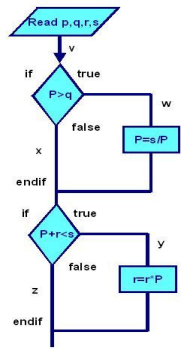
A. A
B. ABD
C. ABCD
D. ACD
Câu 40: Đặc điểm nào sau đây là ĐẶC TRƯNG NHẤT của các kỹ thuật dựa trên đặc tả (hộp đen)? A. Các trường hợp thử nghiệm có thể dễ dàng được tự động hóa. B. Các trường hợp thử nghiệm độc lập với nhau. C. Các trường hợp kiểm thử được xây dựng một cách có hệ thống từ các mô hình của hệ thống. D. Các trường hợp kiểm thử được xây dựng một cách có hệ thống từ mã nguồn đã được cung cấp. |
Câu 41: Tổ hợp nào sau đây mô tả chính xác một phương pháp kiểm thử thành phần hợp lệ? i) Kiểm tra chức năng của linh kiện một cách độc lập. ii) Kiểm thử mã dựa trên cấu trúc mà không cần ghi lại sự cố. iii) Các bài kiểm tra tự động được chạy cho đến khi thành phần vượt qua. iv) Kiểm tra chức năng của các giao diện giữa các mô-đun. A. i và ii. B. Tôi,ii và iii C. iii. D. ii và iv |
Câu 42: Mục đích nào sau đây là mục đích của giai đoạn lập kế hoạch đánh giá? A. Các khuyết tật của nhật ký. B. Giải thích các tài liệu cho người tham gia. C. Thu thập số liệu. D. Phân công vai trò cho từng cá nhân. |
Câu 43: Đường cong tỷ lệ xuất hiện lỗi: A. Biểu thị số lượng lỗi mới được phát hiện trên mỗi đơn vị thời gian. B. Thể hiện số lượng lỗi chưa khắc phục trên mỗi đơn vị thời gian. C. Hiển thị tổng số lỗi tích lũy được phát hiện cho đến thời điểm này. D. Bất kỳ đáp án nào trong số này, tùy thuộc vào công ty. |
Câu 44: Định nghĩa nào sau đây là định nghĩa chính xác nhất về kiểm thử toàn diện: A. Bạn đã phát hiện ra tất cả các lỗi trong chương trình. B. Bạn đã kiểm tra mọi câu lệnh, nhánh và tổ hợp nhánh trong chương trình. C. Bạn đã hoàn thành mọi bài kiểm tra trong kế hoạch kiểm thử. D. Bạn đã đến ngày giao hàng dự kiến. |
Câu 45: Báo cáo đầy đủ và phạm vi bao phủ chi nhánh có nghĩa là: A. Bạn đã kiểm tra mọi câu lệnh trong chương trình. B. Bạn đã kiểm tra mọi câu lệnh và mọi nhánh trong chương trình. C. Bạn đã kiểm tra mọi câu lệnh IF trong chương trình. D. Bạn đã kiểm tra mọi tổ hợp giá trị của các câu lệnh IF trong chương trình. |
Câu 46: Có một số rủi ro khi quản lý tiến độ dự án của bạn bằng mô hình độ tin cậy thống kê. Những rủi ro này bao gồm (chọn một hoặc nhiều điều sau): A. Người kiểm thử dành nhiều năng lượng hơn cho việc tìm lỗi ngay từ giai đoạn đầu của sản phẩm so với việc chuẩn bị để thực hiện các công việc còn lại của dự án một cách hiệu quả hơn. B. Các nhà quản lý có thể không nhận ra rằng nỗ lực kiểm thử không hiệu quả khi dự án đã ở giai đoạn cuối, bởi vì họ kỳ vọng tỷ lệ tìm thấy lỗi thấp, do đó tỷ lệ thấp đạt được không khiến họ lo ngại. C. Điều này có thể làm tăng áp lực lên các chuyên viên kiểm thử vào cuối dự án, khiến họ không muốn tìm ra lỗi hoặc không muốn báo cáo lỗi. D. Tất cả các đáp án trên |
Câu 47: Những lỗi điển hình dễ phát hiện hơn trong quá trình xem xét lại so với quá trình kiểm thử động là: A. Sai lệch so với tiêu chuẩn, B. Các khiếm khuyết về yêu cầu, C. Các lỗi thiết kế, D. Khả năng bảo trì không đầy đủ và thông số kỹ thuật giao diện không chính xác. E. Tất cả các đáp án trên. |
Câu 48: Đánh giá, phân tích tĩnh và kiểm thử động đều có cùng mục tiêu. A. Xác định các khuyết điểm. B. Khắc phục lỗi. C. Cả A và B. D. Không có đáp án nào đúng |
Câu 49: Chúng ta có thể đạt được độ bao phủ câu lệnh hoàn chỉnh nhưng vẫn bỏ sót lỗi vì: A. Lỗi chỉ xảy ra nếu bạn đến được câu lệnh thực thi nhánh TRUE của câu lệnh IF, và bạn đã đến được câu lệnh có điều kiện kiểm tra thành công nhánh FALSE. B. Lỗi xảy ra là do chương trình không có khả năng xử lý các giá trị dữ liệu cụ thể, chứ không phải do luồng điều khiển của chương trình. C. Chúng ta không bắt buộc phải kiểm thử mã mà khách hàng không có khả năng thực thi. D. Tất cả các đáp án trên |
Câu 50: Sự trục trặc trong đo lường là một vấn đề vì: A. Mặc dù những con số bạn nhìn vào có vẻ tốt hơn, nhưng để đạt được những con số đó, mọi người lại làm những khía cạnh khác trong công việc của họ kém hiệu quả hơn nhiều. B. Chúng ta không biết cách đo lường một biến số (phương pháp đo lường của chúng ta bị lỗi) và do đó chúng ta không biết cách diễn giải kết quả. C. Bạn đang đo sai thứ và do đó đưa ra kết luận sai. D. Tất cả các đáp án trên đều đúng. |
Câu 51: Hậu quả quan trọng của việc không thể tiến hành kiểm tra đầy đủ là (Chọn một hoặc nhiều đáp án): A. Chúng ta không bao giờ có thể chắc chắn rằng chương trình hoàn toàn không có lỗi. B. Chúng ta không có điểm dừng cụ thể nào cho việc thử nghiệm, điều này khiến một số nhà quản lý dễ dàng biện minh cho việc thử nghiệm quá ít. C. Chúng ta không có câu trả lời dễ dàng cho việc xác định những nhiệm vụ kiểm thử nào luôn cần thiết, bởi vì mỗi nhiệm vụ đều tốn thời gian mà lẽ ra có thể dành cho những nhiệm vụ quan trọng khác. D. Tất cả các đáp án trên. |
Câu 52: Các đặc điểm phần mềm kém là A. Chỉ rủi ro dự án B. Chỉ rủi ro sản phẩm C. Rủi ro dự án và rủi ro sản phẩm D. Rủi ro dự án hoặc rủi ro sản phẩm |
Câu 53: Việc kiểm thử hệ thống nên điều tra A. Chỉ yêu cầu phi chức năng, không bao gồm yêu cầu chức năng. B. Chỉ yêu cầu chức năng, không bao gồm các yêu cầu phi chức năng. C. Yêu cầu phi chức năng và Yêu cầu chức năng D. Yêu cầu phi chức năng hoặc Yêu cầu chức năng |
Câu 54: Kiểm tra hợp đồng và quy định là một phần của A. System testing B. Acceptance testing C. Integration testing D. Smoke testing |
Câu 55: Tìm trình tự đúng của các giai đoạn trong một cuộc đánh giá chính thức A. Lập kế hoạch, Cuộc họp xem xét, Chỉnh sửa, Khởi động B. Lập kế hoạch, Chuẩn bị cá nhân, Khởi động, Điều chỉnh C. Lập kế hoạch, Cuộc họp xem xét, Chỉnh sửa, Theo dõi D. Lập kế hoạch, Chuẩn bị cá nhân, Theo dõi, Khởi động |
Câu 56: Mục tiêu nào sau đây không phải là mục tiêu kiểm tra? A. Tìm kiếm khuyết điểm B. Tạo dựng niềm tin về chất lượng sản phẩm và cung cấp thông tin. C. Ngăn ngừa sai sót. D. Khắc phục lỗi |
Câu 57: Các bản phát hành bảo trì và các trung tâm hỗ trợ kỹ thuật là ví dụ về loại chi phí chất lượng nào sau đây? A. Lỗi bên ngoài B. Lỗi nội bộ C. Đánh giá D. Phòng ngừa |
Câu 58: Rủi ro nào sau đây không phải là rủi ro của dự án? A. Các vấn đề về nhà cung cấp B. Các yếu tố tổ chức C. Các vấn đề kỹ thuật D. Phần mềm dễ xảy ra lỗi được cung cấp |
Câu 59: Vòng đời của côn trùng A. Mở, Đã chỉ định, Cố định, Đóng B. Mở, Cố định, Được chỉ định, Đóng C. Đã chỉ định, Mở, Đóng, Cố định D. Đã phân bổ, Mở, Cố định, Đóng |
Câu 60: Ai chịu trách nhiệm ghi lại tất cả các vấn đề, sự cố và điểm chưa được giải quyết đã được xác định trong cuộc họp đánh giá? A. Người điều phối B. Thư ký C. Người đánh giá D. Tác giả |
Câu 61: ‘X’ đã cung cấp dữ liệu về tuổi của một người, tuổi này nằm trong khoảng từ 1 đến 99. Sử dụng BVA, đâu là đáp án thích hợp? A. 0,1,2,99 B. 1, 99, 100, 98 C. 0, 1, 99, 100 D. –1, 0, 1, 99 |
Câu 62: Nguyên tắc nào sau đây không phải là nguyên tắc kiểm tra? A. Thử nghiệm sớm B. Sự tập trung các khuyết tật C. Nghịch lý thuốc trừ sâu D. Kiểm tra toàn diện |
Câu 63: Một dự án đang trong giai đoạn triển khai bị chậm tiến độ sáu tuần. Thời hạn giao hàng của sản phẩm còn bốn tháng nữa. Dự án không được phép chậm trễ thời hạn giao hàng hoặc thỏa hiệp về các tiêu chuẩn chất lượng đã được thiết lập cho sản phẩm. Hành động nào sau đây sẽ giúp dự án trở lại đúng tiến độ? A. Loại bỏ một số yêu cầu chưa được thực hiện. B. Bổ sung thêm kỹ sư vào dự án để bù đắp cho khối lượng công việc bị thiếu. C. Yêu cầu các lập trình viên hiện tại làm thêm giờ cho đến khi khôi phục được khối lượng công việc bị mất. D. Tuyển thêm nhân viên kiểm định chất lượng phần mềm. |
Câu 64: Việc kiểm tra ___________ sẽ được thực hiện bởi những người tại địa điểm của khách hàng. A. Alpha testing B. Field testing C. Performance testing D. System testing |
Câu 65: Tiêu chuẩn nào sau đây là tiêu chuẩn cho chất lượng sản phẩm phần mềm? A. ISO 1926 B. ISO 829 C. ISO 1012 D. ISO 1028 |
Câu 66: Kỹ thuật nào không phải là kỹ thuật kiểm thử hộp đen? A. Phân vùng tương đương B. Bảng quyết định C. Sơ đồ giao dịch D. Kiểm thử quyết định |
Câu 67: Tìm điểm không khớp A. Công cụ chuẩn bị dữ liệu thử nghiệm – Thao tác với cơ sở dữ liệu B. Công cụ thiết kế kiểm thử – Tạo dữ liệu đầu vào cho kiểm thử C. Công cụ quản lý yêu cầu – Cho phép theo dõi từng bài kiểm thử riêng lẻ D. Công cụ quản lý cấu hình – Kiểm tra tính nhất quán |
Câu 68: Có thể thực hiện các trường hợp sử dụng để kiểm tra. A. Kiểm thử hiệu năng B. Kiểm thử đơn vị C. Các kịch bản kinh doanh D. Kiểm tra tĩnh |
Câu 69: Mục đích của kỹ thuật thiết kế thử nghiệm là gì? A. Chỉ xác định các điều kiện thử nghiệm, không xác định các trường hợp thử nghiệm. B. Không xác định điều kiện thử nghiệm, chỉ xác định các trường hợp thử nghiệm. C. Xác định điều kiện thử nghiệm và xác định các trường hợp thử nghiệm D. Xác định điều kiện thử nghiệm hoặc Xác định trường hợp thử nghiệm |
Câu 70: Một người đang chi phối cuộc họp cải tiến quy trình phần mềm hiện tại. Người điều phối nên sử dụng kỹ thuật nào sau đây để thu hút các thành viên khác trong nhóm tham gia thảo luận? A. Hãy đối chất với người đó và yêu cầu các thành viên khác trong nhóm được phép bày tỏ ý kiến của họ. B. Chờ người đó dừng lại, ghi nhận ý kiến của họ, và hỏi ý kiến của người khác. C. Chuyển chủ đề sang một vấn đề mà người đó không có quan điểm mạnh mẽ. D. Bày tỏ ý kiến khác với ý kiến của người khác nhằm khuyến khích người khác bày tỏ ý kiến của họ. |
Câu 71: Thử nghiệm ngẫu nhiên sử dụng thông tin thống kê hoặc hồ sơ hoạt động sử dụng phương pháp sau: A. Phương pháp kiểm thử dựa trên kinh nghiệm B. Phương pháp kiểm thử có hệ thống C. Phương pháp kiểm thử dựa trên mô hình D. Phương pháp kiểm thử tuân thủ quy trình hoặc tiêu chuẩn |
Câu 72: Một mô hình phần mềm không thể sử dụng trong kiểm thử chức năng A. Process flow model B. State transaction model C. Menu structure model D. Plain language specification model |
Câu 73: Thử nghiệm hồ quang được gọi là A. Branch testing B. Agile testing C. Beta testing D. Ad-hoc testing |
Câu 74: Mục đích của tiêu chí thoát là gì? A. Xác định thời điểm dừng kiểm tra B. Kết thúc cấp độ kiểm tra C. Khi một loạt các bài kiểm tra đã đạt được một điều kiện tiên quyết cụ thể D. Tất cả các đáp án trên |
Câu 75: Kỹ thuật ___________ có thể được sử dụng để đạt được độ phủ đầu vào và đầu ra A. Boundary value analysis B. Equivalence partitioning C. Decision table testing D. State transition testing |
Câu 76: Việc kiểm thử __________ được thực hiện tại địa điểm của tổ chức phát triển. A. Unit testing B. Regression testing C. Alpha testing D. Integration testing |
Câu 77: Mục đích chính của việc đánh giá không chính thức là gì? A. Cách tiết kiệm để đạt được một số lợi ích B. Tìm lỗi C. Học hỏi, thu nhận kiến thức, tìm ra hiệu quả D. Thảo luận, đưa ra quyết định, giải quyết các vấn đề kỹ thuật |
Câu 78: Cái nào không phải là kiểm thử thành phần? A. Kiểm tra rò rỉ bộ nhớ B. Kiểm tra tính ổn định C. Kiểm tra độ phủ của nhánh D. Kiểm tra bảng quyết định |
Câu 79: Vai trò của kỹ sư phần mềm trong việc lựa chọn công cụ là gì? A. Xác định, đánh giá và xếp hạng các công cụ, đồng thời đề xuất các công cụ cho ban quản lý. B. Xác định loại công cụ nào cần thiết, sau đó tìm kiếm và mua nó. C. Khởi xướng việc tìm kiếm công cụ và trình bày trường hợp này với ban quản lý. D. Xác định, đánh giá và lựa chọn các công cụ |
Câu 80: Quy trình kiểm tra nào không phải là quy trình kiểm tra cơ bản? A. Lập kế hoạch và kiểm soát B. Các hoạt động kết thúc thử nghiệm C. Phân tích và thiết kế D. Không có |
Câu 81: ________ và ________ được sử dụng trong từng bàn làm việc riêng lẻ để tạo ra sản phẩm đầu ra phù hợp. A. Công cụ và kỹ thuật B. Quy trình và tiêu chuẩn C. Quy trình và hướng dẫn từng bước D. Đánh giá và cập nhật |
Câu 82: Đặc điểm nào sau đây không phải là đặc điểm của phần mềm? A. Độ tin cậy B. Khả năng sử dụng C. Khả năng mở rộng D. Khả năng bảo trì |
Câu 83: Nguyên tắc về độ phức tạp Cyclomatic, xem L là các cạnh hoặc liên kết, N là các nút, P là các đường dẫn độc lập. A. L-N +2P B. N-L +2P C. N-L +P D. N-L +P |
Câu 84: FPA được sử dụng để A. Để đánh giá các yêu cầu chức năng của dự án B. Để đo lường quy mô chức năng của một hệ thống thông tin. C. Để đo lường nỗ lực kiểm thử chức năng. D. Để đo lường dòng chảy chức năng |
Câu 85: _____ là phương pháp từng bước được tuân theo để đảm bảo các tiêu chuẩn được đáp ứng. A. SDLC B. Kế hoạch dự án C. Chính sách D. Quy trình |
Câu 86: Cái nào không phải là bài kiểm tra Oracle A. Hệ thống hiện hành (Để làm chuẩn mực) B. Mã C. Kiến thức cá nhân D. Hướng dẫn sử dụng |
Câu 87: Chu trình PDCA được gọi là gì? A. Lập kế hoạch, Thực hiện, Kiểm tra, Hành động B. Lập kế hoạch, Thực hiện, Sửa chữa, Hành động C. Lập kế hoạch, gỡ lỗi, kiểm tra, hành động D. Lập kế hoạch, Thực hiện, Kiểm tra, Chấp nhận |
Câu 88: Kiểm thử phi chức năng là gì? A. Performance testing B. Unit testing C. Regression testing D. Sanity testing |
Câu 89: Bản phác thảo kế hoạch kiểm thử bao gồm những nội dung nào sau đây: i. Các mục kiểm tra ii. Kịch bản kiểm thử iii. Sản phẩm đầu ra của quá trình kiểm thử iv. Trách nhiệm A. i, ii, iii đúng và iv sai B. i, iii, iv đúng và ii sai C. ii, iii đúng, còn i và iv sai D. i, ii sai và iii, iv đúng |
Câu 90: Thử nghiệm trong đó chúng ta đặt đối tượng thử nghiệm vào các khối lượng công việc khác nhau để đo lường và đánh giá hành vi hoạt động và khả năng của đối tượng thử nghiệm cũng như khả năng tiếp tục hoạt động bình thường dưới các khối lượng công việc khác nhau này. A. Load Testing B. Integration Testing C. System Testing D. Usability Testing |
Câu 91: Nhiệm vụ nào sau đây là nhiệm vụ của người kiểm thử? i. Phối hợp với nhà cung cấp công cụ kiểm thử để xác định những cách tốt nhất để tận dụng công cụ kiểm thử trong dự án. ii. Chuẩn bị và thu thập dữ liệu thử nghiệm iii. Triển khai các bài kiểm thử ở tất cả các cấp độ kiểm thử, thực hiện và ghi nhật ký các bài kiểm thử. iv. Xây dựng đặc tả kiểm thử A. i, ii, iii đúng và iv sai B. ii, iii, iv đúng và i sai C. i đúng và ii, iii, iv sai D. iii và iv đúng, còn i và ii sai. |
Câu 92: Phân tích tĩnh KHÔNG thể phát hiện ra điều gì? A. Việc sử dụng một biến trước khi biến đó được định nghĩa. B. Mã không thể truy cập ("mã chết") C. Rò rỉ bộ nhớ D. Vi phạm giới hạn mảng |
Câu 93: Kỹ thuật hộp trắng còn được gọi là: A. Kiểm tra cấu trúc B. Kiểm thử dựa trên thiết kế C. Kỹ thuật đoán lỗi D. Kỹ thuật dựa trên kinh nghiệm |
Câu 94: Việc xem xét lại cơ sở kiểm tra là một phần của giai đoạn nào? A. Phân tích và thiết kế thử nghiệm B. Triển khai và thực hiện kiểm thử C. Các hoạt động kết thúc bài kiểm tra D. Đánh giá tiêu chí rút lui và báo cáo |
Câu 95: Kiểm thử linh kiện còn được gọi là: i. Kiểm thử đơn vị ii. Kiểm thử chương trình iii. Kiểm thử mô-đun iv. Kiểm thử thành phần hệ thống. A. i, ii, iii đúng và iv sai B. i, ii, iii, iv là sai C. i, ii, iv đúng và iii sai D. Tất cả những điều trên đều đúng |
Câu 96: Điều nào sau đây không phải là nhiệm vụ chính của tiêu chí thoát? A. Kiểm tra nhật ký kiểm thử so với các tiêu chí thoát được chỉ định trong kế hoạch kiểm thử. B. Ghi lại kết quả thực thi kiểm thử. C. Đánh giá xem có cần thực hiện thêm xét nghiệm nào nữa không. D. Viết báo cáo tóm tắt kết quả kiểm tra cho các bên liên quan. |
Câu 97: Phát biểu nào sau đây là đúng về việc xem xét hoặc kiểm tra chính thức? i. Được điều hành bởi người điều phối được đào tạo (không phải tác giả). ii. Không cần chuẩn bị trước cuộc họp iii. Quy trình theo dõi chính thức. iv. Mục tiêu chính là tìm ra các khuyết điểm. A. ii đúng và i, iii, iv sai B. i, iii, iv đúng và ii sai C. i, iii, iv là sai và ii là đúng D. iii đúng và i, ii, iv sai |
Câu 98: Các giai đoạn của quy trình xem xét chính thức được nêu dưới đây, hãy sắp xếp chúng theo đúng thứ tự. i. Lập kế hoạch ii. Cuộc họp đánh giá iii. Sửa đổi iv. Chuẩn bị cá nhân v. Khởi động vi. Theo dõi A. i,i,iii,v,v,vi B. V,i,ii,iii,v,v C. i,v,v,ii,ii,vi D. i,i,iii,v,v,vi |
Câu 99: Hoạt động kiểm thử được thực hiện để phát hiện các khuyết tật trong giao diện và trong sự tương tác giữa các thành phần tích hợp là: A. System Level Testing B. Integration Level Testing C. Unit Level Testing D. Component Testing |
Câu 100: Các phương pháp được áp dụng trong quá trình thực hiện kiểm tra bảo trì: A. Breadth Test and Depth Test B. Re-testing C. Confirmation Testing D. Sanity Testing |
Câu 101: Công tắc được tắt khi nhiệt độ xuống dưới 18 độ và được bật khi nhiệt độ trên 21 độ. Khi nhiệt độ trên 21 độ, hãy xác định các giá trị tương đương thuộc cùng một lớp. A. 12,16,22 B. 24,27,17 C. 22,23,24 D. 14,15,19 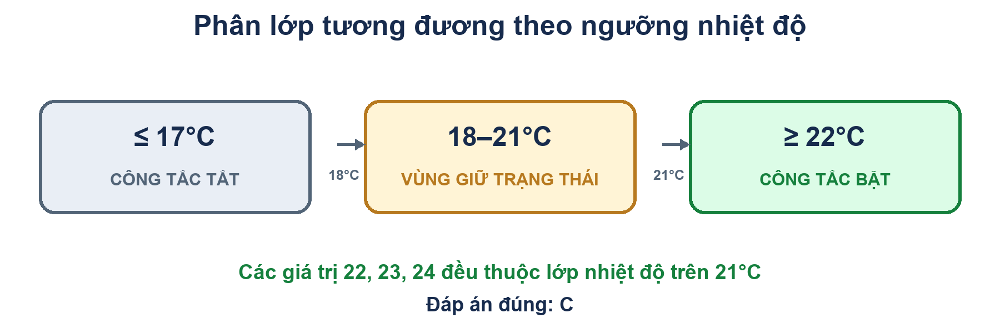 Cách nhìn hình: với nhiệt độ nguyên, ≤17°C là lớp dưới ngưỡng tắt; 18–21°C là vùng giữa ngưỡng; ≥22°C là lớp trên ngưỡng bật. 22, 23, 24 cùng thuộc lớp trên 21°C. Đáp án đúng: C. |
Câu 102: Phân vùng tương đương (còn được gọi là lớp tương đương) là gì? A. Một tập hợp các trường hợp thử nghiệm để kiểm tra các lớp đối tượng B. Một phạm vi giá trị đầu vào hoặc đầu ra sao cho chỉ có một giá trị trong phạm vi đó trở thành trường hợp thử nghiệm. C. Một phạm vi giá trị đầu vào hoặc đầu ra sao cho mỗi giá trị trong phạm vi đó trở thành một trường hợp thử nghiệm. D. Một phạm vi giá trị đầu vào hoặc đầu ra sao cho cứ mỗi giá trị thứ mười trong phạm vi đó trở thành một trường hợp thử nghiệm. |
Câu 103: Mục nào sau đây không phải là một phần của Giai đoạn Triển khai và Thực thi Kiểm thử A. Tạo bộ kiểm thử từ các trường hợp kiểm thử B. Thực hiện các trường hợp kiểm thử thủ công hoặc bằng cách sử dụng các công cụ thực thi kiểm thử C. So sánh kết quả thực tế D. Thiết kế các bài kiểm tra |
Câu 104: Kiểm thử liên kết còn được gọi là: A. Component Integration testing B. Component System Testing C. Component Sub System Testing D. Maintenance testing |
Câu 105: Những người nào tham gia vào quá trình xem xét chính thức? i. Quản lý ii. Người điều phối iii. Thư ký/Người ghi chép iv. Trợ lý quản lý A. i, ii, iii, iv đều đúng B. i, ii, iii đúng và iv sai. C. ii, iii, iv đúng và i sai. D. i, iv đúng và ii, iii sai. |
Câu 106: Phát biểu nào sau đây về kiểm thử tĩnh là sai? A. Kiểm thử tĩnh yêu cầu chạy các bài kiểm thử thông qua mã nguồn. B. Kiểm tra tĩnh bao gồm kiểm tra trên bàn. C. Kiểm thử tĩnh bao gồm các kỹ thuật như xem xét và kiểm tra. D. Kiểm thử tĩnh có thể cung cấp các phép đo như độ phức tạp chu trình. |
Câu 107: Việc thiết kế môi trường thử nghiệm và xác định bất kỳ cơ sở hạ tầng và công cụ cần thiết nào thuộc giai đoạn nào? A. Triển khai và thực hiện kiểm thử B. Phân tích và thiết kế thử nghiệm C. Đánh giá các tiêu chí rút lui và báo cáo D. Các hoạt động kết thúc bài kiểm tra |
Câu 108: Một loại kiểm thử chức năng, nghiên cứu các chức năng liên quan đến việc phát hiện các mối đe dọa, chẳng hạn như virus từ các tác nhân độc hại bên ngoài. A. Security Testing B. Recovery Testing C. Performance Testing D. Functionality Testing |
Câu 109: Người ghi chép lại tất cả các vấn đề, sự cố và điểm chưa được giải quyết đã được xác định trong quá trình xem xét chính thức. A. Người điều phối. B. Thư ký C. Tác giả D. Quản lý |
Câu 110: Các trường hợp kiểm thử được rút ra từ các trường hợp sử dụng A. Chúng hữu ích nhất trong việc phát hiện các lỗi trong quy trình vận hành trong quá trình sử dụng hệ thống thực tế. B. Chúng hữu ích nhất trong việc phát hiện các lỗi trong quy trình vận hành trong quá trình thử nghiệm hệ thống. C. Có ích nhất trong việc khắc phục các lỗi trong quy trình vận hành trong quá trình sử dụng hệ thống thực tế. D. Hữu ích nhất trong việc khắc phục các lỗi ở cấp độ tích hợp. |
Câu 111: Một trong các trường trên biểu mẫu chứa một hộp văn bản chấp nhận các giá trị chữ số. Xác định lớp tương đương hợp lệ. A. SÁCH B. Sách C. Boo01k D. book |
Câu 112: Trong một kỳ thi, thí sinh phải đạt tối thiểu 24 điểm để vượt qua kỳ thi. Điểm tối đa mà thí sinh có thể đạt được là 40 điểm. Hãy xác định các giá trị tương đương hợp lệ nếu thí sinh vượt qua kỳ thi. A. 22,23,26 B. 21,39,40 C. 29,30,31 D. 0,15,22 |
Câu 113: Quá trình xác minh bao gồm những hoạt động nào sau đây: i. Giúp kiểm tra chất lượng của sản phẩm đã hoàn thiện ii. Giúp kiểm tra xem chúng ta đã xây dựng đúng sản phẩm hay chưa. iii. Giúp phát triển sản phẩm iv. Giám sát sự lãng phí và lỗi thời của các công cụ. A. Các phương án i, ii, iii, iv đều đúng. B. i là đúng và ii, iii, iv là sai C. i, ii, iii đúng và iv sai D. ii đúng, còn i, iii, iv sai. |
Câu 114: Rủi ro dự án bao gồm những điều nào sau đây: A. Các yếu tố tổ chức B. Đặc điểm phần mềm kém C. Phần mềm dễ xảy ra lỗi được cung cấp. D. Phần mềm không thực hiện được các chức năng dự định. |
Câu 115: Đặc điểm chính nào sau đây là đặc điểm của việc đi khảo sát thực địa? A. Kịch bản, Diễn tập thử, Nhóm đồng nghiệp B. Chuẩn bị trước cuộc họp C. Quy trình theo dõi chính thức D. Bao gồm các chỉ số |
Câu 116: Kỹ thuật nào sau đây KHÔNG phải là kỹ thuật hộp trắng? A. Statement Testing and coverage B. Decision Testing and coverage C. Condition Coverage D. Boundary value analysis |
Câu 117: Việc báo cáo các sai lệch dưới dạng sự cố thuộc giai đoạn nào? A. Phân tích và thiết kế thử nghiệm B. Triển khai và thực hiện kiểm thử C. Các hoạt động kết thúc bài kiểm tra D. Đánh giá tiêu chí rút lui và báo cáo |
Câu 118: Trong phương pháp tiếp cận dựa trên rủi ro, các rủi ro được xác định có thể được sử dụng để: i. Xác định kỹ thuật thử nghiệm cần sử dụng ii. Xác định phạm vi thử nghiệm cần thực hiện iii. Ưu tiên việc kiểm thử nhằm phát hiện các lỗi nghiêm trọng càng sớm càng tốt. iv. Xác định chi phí của dự án A. ii là đúng; i, iii, iv & v là sai B. i, ii, iii đúng và iv sai C. ii & iii là đúng; i, iv là sai D. ii, iii & iv là đúng; i là sai |
Câu 119: Các sự việc sẽ không được nêu ra đối với: A. Yêu cầu B. Hồ sơ C. Các trường hợp thử nghiệm D. Những cải tiến do người dùng đề xuất |
Câu 120: Giai đoạn lập kế hoạch của một cuộc đánh giá chính thức bao gồm những điều sau đây: A. Giải thích các mục tiêu B. Tuyển chọn nhân sự, phân công vai trò. C. Theo dõi D. Chuẩn bị cho các cuộc họp cá nhân |
Câu 121: Việc triển khai và thực hiện kiểm thử bao gồm những nhiệm vụ chính nào sau đây? i. Phát triển và ưu tiên các trường hợp thử nghiệm, tạo dữ liệu thử nghiệm, viết quy trình thử nghiệm và (tùy chọn) chuẩn bị các công cụ kiểm thử và viết các kịch bản kiểm thử tự động. ii. Tạo bộ kiểm thử từ các trường hợp kiểm thử để thực hiện kiểm thử hiệu quả. iii. Xác minh rằng môi trường kiểm thử đã được thiết lập chính xác. iv. Xác định tiêu chí rút lui. A. i, ii, iii đúng và iv sai B. i, iv đúng và ii sai C. i, ii đúng và iii, iv sai D. ii, iii, iv đúng và i sai |
Câu 122: Một trong các trường trên biểu mẫu chứa một hộp văn bản chấp nhận các giá trị số trong khoảng từ 18 đến 25. Hãy xác định lớp tương đương không hợp lệ. A. 17 B. 19 C. 24 D. 21 |
Câu 123: Kiểm tra toàn diện là A. Không thực tế nhưng vẫn có thể thực hiện được B. Có thể thực hiện được trên thực tế C. Không thực tế và không thể thực hiện được D. Luôn luôn có thể |
Câu 124: Việc bàn giao phần mềm kiểm thử là một phần của giai đoạn nào? A. Phân tích và thiết kế thử nghiệm B. Lập kế hoạch và kiểm soát thử nghiệm C. Các hoạt động kết thúc bài kiểm tra D. Đánh giá tiêu chí rút lui và báo cáo |
Câu 125: Cái nào không thuộc tiêu chuẩn quốc tế? A. IEC B. IEEE C. ISO D. Tất cả các đáp án trên |
Câu 126: Thử nghiệm tĩnh được sử dụng trong giai đoạn nào? A. Yêu cầu B. Thiết kế C. Lập trình D. Tất cả các đáp án trên |
Câu 127: Nhược điểm của kiểm thử hộp đen là gì? A. Khả năng lặp lại các bài kiểm tra đã được lập trình viên thực hiện. B. Dữ liệu đầu vào cho bài kiểm tra cần được lấy từ một không gian mẫu lớn. C. Việc xác định tất cả các đầu vào có thể có trong thời gian kiểm thử hạn chế là rất khó. Do đó, việc viết các trường hợp kiểm thử diễn ra chậm và khó khăn. D. Tất cả các đáp án trên |
Câu 128: Các công cụ phân tích tĩnh thường được sử dụng bởi A. Người kiểm thử B. Các nhà phát triển C. Nhân viên kiểm thử và phát triển phần mềm D. Không có |
Câu 129: Phần lớn các lỗi hệ thống xảy ra ở giai đoạn _________ A. Giai đoạn xác định yêu cầu. B. Giai đoạn Phân tích và Thiết kế C. Giai đoạn phát triển D. Giai đoạn thử nghiệm |
Câu 130: Bản đặc tả mô tả các bước cần thiết để vận hành hệ thống và thực hiện các trường hợp thử nghiệm nhằm triển khai thiết kế thử nghiệm liên quan. A. Test Case Specification B. Test Design Specification C. Test Procedure Specification D. Không có |
Câu 131: Chi phí bảo trì chiếm bao nhiêu phần trăm tổng chi phí vòng đời của một phần mềm? A. 10% B. 30% C. 50% D. 70% |
Câu 132: Khi một lỗi được phát hiện và khắc phục, phần mềm cần được kiểm tra lại để xác nhận rằng lỗi ban đầu đã được loại bỏ thành công. Quá trình này được gọi là A. Kiểm thử hồi quy B. Kiểm tra bảo trì C. Kiểm tra xác nhận D. Không có đáp án nào đúng |
Câu 133: Kiểm thử tương đương chia miền dữ liệu đầu vào thành các lớp dữ liệu, từ đó có thể tạo ra các trường hợp kiểm thử để giảm tổng số trường hợp kiểm thử cần phải phát triển. A. Đúng B. Sai |
Câu 134: Khi nào nên ngừng thử nghiệm? A. Dừng lại khi hết thời gian kiểm tra theo lịch trình. B. Dừng lại nếu phát hiện 75% số lỗi đã được xác định trước. C. Dừng lại khi tất cả các trường hợp kiểm thử được thực thi và phát hiện ít lỗi. D. Không có đáp án nào ở trên |
Câu 135: Với việc kiểm tra kỹ lưỡng, có thể loại bỏ tất cả các lỗi khỏi chương trình trước khi giao cho khách hàng. A. Đúng B. Sai |
Câu 136: Cấu trúc chưa được biết đối với loại dự án phát triển nào? A. Phát triển hệ thống truyền thống B. Phát triển lặp đi lặp lại C. Bảo trì hệ thống D. Phần mềm đã mua/được thuê |
Câu 137: ________cho biết mức độ quan trọng của việc sửa lỗi và thời điểm cần sửa lỗi. A. Mức độ nghiêm trọng B. Ưu tiên C. Tất cả các đáp án trên D. Không có đáp án nào đúng |
Câu 138: Người chủ trì việc xem xét tài liệu, lập kế hoạch xem xét, điều hành cuộc họp và theo dõi sau cuộc họp. A. Người đánh giá B. Tác giả C. Người điều phối D. Kiểm toán viên |
Câu 139: Thực hiện kiểm thử đầy đủ để đánh giá mọi đường dẫn và điều kiện có thể xảy ra trong hệ thống ứng dụng. Phương pháp kiểm thử duy nhất đảm bảo hoạt động đúng đắn của hệ thống ứng dụng được gọi là _____________ A. Regression Testing B. Exhaustive Testing C. Basic Path Testing D. Branch Testing |
Câu 140: Đảm bảo chất lượng là quá trình so sánh chất lượng sản phẩm với các tiêu chuẩn ứng dụng và các biện pháp được thực hiện khi phát hiện sự không phù hợp. A. Đúng B. Sai |
Câu 141: Một đánh giá chính thức về sản phẩm công việc được thực hiện bởi một hoặc nhiều người đánh giá độc lập có trình độ chuyên môn để phát hiện các khiếm khuyết. A. Kiểm tra. B. Hướng dẫn chi tiết. C. Ôn tập D. Sự không phù hợp |
Câu 142: Các trường hợp kiểm thử được nhóm thành các đơn vị có thể quản lý (và lên lịch) được gọi là A. Test Harness B. Test Suite C. Test Cycle D. Test Driver |
Câu 143: Việc thuê ngoài thường là lựa chọn tốt cho việc cấu hình và kiểm thử tương thích. A. Đúng B. Sai |
Câu 144: Loại công cụ nào nên được sử dụng cho kiểm thử hồi quy? A. Hiệu suất B. Ghi âm/Phát lại C. A. & B. D. Không có |
Câu 145: Việc kiểm thử tích hợp hệ thống nên được thực hiện sau khi A. Integration testing B. System testing C. Unit testing D. Component integration testing |
Câu 146: Trong sự kiện này, toàn bộ hệ thống được kiểm tra để xác minh rằng tất cả các yêu cầu về thông tin chức năng, cấu trúc và chất lượng đã được đáp ứng. Một tổ hợp các bài kiểm tra đã được xác định trước được thiết kế sao cho khi được thực hiện thành công sẽ thuyết phục ban quản lý rằng hệ thống đáp ứng các thông số kỹ thuật. A. Validation Testing B. Integration Testing C. User Acceptance Testing D. System Testing |
Câu 147: Trình tự hoạt động thông thường trong việc kiểm thử phần mềm là gì? A. Unit, integration, system, validation B. System, integration, unit, validation C. Unit, integration, validation, system D. Không có đáp án nào đúng |
Câu 148: Mục tiêu của người kiểm thử phần mềm là tìm ra lỗi, tìm ra chúng càng sớm càng tốt và đảm bảo chúng được sửa chữa. A. Đúng B. Sai |
Câu 149: Thử nghiệm Beta được thực hiện tại địa điểm của tổ chức phát triển, trong khi thử nghiệm Alpha được thực hiện bởi mọi người tại địa điểm của họ. A. Đúng B. Sai |
Câu 150: Các thuộc tính chính của công cụ và tự động hóa là gì? A. Tốc độ và hiệu quả B. Độ chính xác và độ chuẩn xác C. Tất cả các đáp án trên D. Không có đáp án nào đúng |
Câu 151: Trong quá trình kiểm thử ______, người kiểm thử không biết gì về phần mềm đang được kiểm thử; họ chỉ nhấp chuột hoặc gõ ngẫu nhiên. A. Random testing B. Gorilla testing C. Adhoc testing D. Dumb monkey testing |
Câu 152: Một loạt các câu hỏi thăm dò về tính đầy đủ và các thuộc tính của một hệ thống ứng dụng được gọi là gì? A. Danh sách kiểm tra B. Kiểm tra lại C. Bảng quyết định D. Cây quyết định |
Câu 153: Kỹ thuật kiểm thử yêu cầu thiết kế các trường hợp kiểm thử để chứng minh rằng mỗi chức năng của chương trình hoạt động được gọi là gì? A. Black-box testing B. Glass-box testing C. Grey-box testing D. White-box testing |
Câu 154: Kỹ thuật kiểm thử hộp trắng đo lường số lượng hoặc tỷ lệ phần trăm các hướng quyết định được thực thi bởi trường hợp kiểm thử được thiết kế được gọi là gì? A. Condition coverage B. Decision/Condition coverage C. Decision Coverage D. Branch coverage |
Câu 155: Tóm tắt các hoạt động kiểm thử liên quan đến một hoặc nhiều đặc tả thiết kế kiểm thử. A. Test Summary report B. Test Log C. Test Incident Report D. Test Script |
Câu 156: Việc kiểm thử mà không có kế hoạch và trường hợp kiểm thử cụ thể được gọi là --- A. Thử nghiệm Gorilla B. Thử nghiệm trên khỉ C. Kiểm thử ngẫu nhiên D. Tất cả các đáp án trên |
Câu 157: Quy tắc nào không nên tuân theo khi đánh giá? A. Các khiếm khuyết và vấn đề được xác định và khắc phục. B. Sản phẩm được đánh giá, không phải nhà sản xuất. C. Tất cả các thành viên của nhóm đánh giá đều chịu trách nhiệm về kết quả đánh giá. D. Mỗi bài đánh giá đều có mục tiêu được xác định rõ ràng từ trước. |
Câu 158: Quá trình xác minh có thể được hiểu là "Chúng ta có đang xây dựng sản phẩm đúng cách không?" A. Đúng B. Sai |
Câu 159: Phương pháp kiểm thử nào được sử dụng để xác minh rằng hệ thống có thể hoạt động bình thường khi các giới hạn nội bộ của chương trình hoặc hệ thống bị vượt quá? A. Stress Testing B. Load Testing C. Performance Testing D. Volume testing |
Câu 160: Các khuyết tật được ghi nhận vì ba mục đích chính. Đó là: 1. Để khắc phục lỗi 2. Báo cáo trạng thái của đơn đăng ký 3. Để cải thiện quy trình phát triển phần mềm A. Đúng B. Sai |
Câu 161: Trình điều khiển là công cụ được sử dụng để điều khiển và vận hành phần mềm đang được kiểm thử. A. Đúng B. Sai |
Câu 162: Các khuyết tật điển hình được phát hiện bằng phân tích tĩnh bao gồm: A. Vi phạm tiêu chuẩn lập trình B. Tham chiếu đến một biến có giá trị chưa được xác định C. Các lỗ hổng bảo mật D. Tất cả các đáp án trên |
Câu 163: EULA viết tắt của A. Thỏa thuận cấp phép sử dụng cuối cùng B. Thỏa thuận cấp phép người dùng cuối C. Thỏa thuận cấp phép người dùng cuối D. Phụ lục Giấy phép Người dùng Cuối |
Câu 164: ________ là một phiên bản thử nghiệm ban đầu, dự định phân phối hạn chế cho một vài khách hàng quan trọng và phục vụ mục đích trình diễn tiếp thị. A. Bản phát hành Alpha B. Bản phát hành Beta C. Tài liệu phát hành thử nghiệm D. Xây dựng |
Câu 165: CAST viết tắt của A. Kiểm thử phần mềm có sự hỗ trợ của máy tính B. Công cụ phần mềm hỗ trợ máy tính C. Các kỹ thuật phần mềm phân tích máy tính D. Không có |
Câu 166: Công cụ sửa đổi mã chương trình hoặc thao tác môi trường hoạt động theo bất kỳ cách nào đều được coi là không xâm phạm. A. Đúng B. Sai |
Câu 167: Bài kiểm tra nào có thể không mô phỏng được tình huống thực tế? A. Kiểm thử chức năng B. Kiểm tra kết cấu C. Tất cả các đáp án trên D. Không có đáp án nào đúng |
Câu 168: _______ bao gồm cả tính năng kiểm thử hộp đen và kiểm thử hộp trắng. A. Kiểm thử hộp xám B. Kiểm thử kết hợp C. A. & B. D. Không có |
Câu 169: Có thể tiến hành kiểm tra toàn diện A. Đúng B. Sai |
Câu 170: Công cụ lưu trữ các câu yêu cầu, kiểm tra tính nhất quán và cho phép ưu tiên các yêu cầu, đồng thời cho phép truy vết các bài kiểm thử riêng lẻ đến các yêu cầu, chức năng và tính năng. A. Công cụ quản lý sự cố B. Công cụ quản lý yêu cầu C. Công cụ quản lý cấu hình D. Không có |
Câu 171: Số lượng phép thử để kiểm tra tất cả các câu lệnh điều khiển bằng độ phức tạp chu trình. A. Đúng B. Sai |
Câu 172: Phân tích giá trị biên chỉ có thể được sử dụng trong quá trình kiểm thử hộp trắng. A. Đúng B. Sai |
Câu 173: Mục tiêu nào sau đây là mục tiêu của kiểm thử phần mềm? A. Xác định năng suất của lập trình viên B. Loại bỏ nhu cầu bảo trì chương trình trong tương lai C. Loại bỏ mọi lỗi trước khi phát hành D. Phát hiện lỗi phần mềm |
Câu 174: Thất bại là _________ A. Chương trình hoạt động không chính xác do lỗi trong chương trình. B. Lỗi được phát hiện trước khi sản phẩm ra mắt C. Lỗi được phát hiện sau khi sản phẩm được phát hành. D. Lỗi được phát hiện trong giai đoạn thiết kế |
Câu 175: Trong quá trình phát triển phần mềm, quá trình kiểm thử có thể bắt đầu ở giai đoạn nào? A. Khi mã đã hoàn tất. B. Khi thiết kế hoàn tất. C. Khi các yêu cầu phần mềm đã được phê duyệt. D. Khi mô-đun mã đầu tiên sẵn sàng cho kiểm thử đơn vị |
Câu 176: "Kiểm tra bao nhiêu là đủ?" A. Câu hỏi này không thể trả lời được. B. Câu hỏi này dễ trả lời. C. Câu trả lời phụ thuộc vào rủi ro của ngành, hợp đồng và các yêu cầu đặc biệt của bạn. D. Câu trả lời này phụ thuộc vào trình độ chuyên môn của các nhà phát triển của bạn. |
Câu 177: Công cụ nào sau đây sẽ được sử dụng trong việc tự động hóa kiểm thử hồi quy? A. Người kiểm thử dữ liệu B. Bộ kiểm tra ranh giới C. Ghi hình/Phát lại D. Bộ so sánh đầu ra. |
Câu 178: Dạng sai của phạm vi phủ sóng logic là: A. Statement Coverage B. Pole Coverage C. Condition Coverage D. Path Coverage |
Câu 179: Độ phủ mã được sử dụng để đo lường điều gì? A. Các khuyết điểm B. Phân tích xu hướng C. Hiệu quả của thử nghiệm D. Thời gian dành cho việc kiểm tra |
Câu 180: Che giấu lỗi là A. Điều kiện lỗi che giấu một điều kiện lỗi khác B. Tạo một trường hợp thử nghiệm không phát hiện ra lỗi C. Nhà phát triển che giấu lỗi D. Che giấu lỗi bởi người kiểm thử |
Câu 181: Đặc tính chất lượng nào sau đây không được liệt kê trong tiêu chuẩn ISO 9126? A. Chức năng B. Khả năng sử dụng C. Khả năng hỗ trợ D. Khả năng bảo trì |
Câu 182: Một lý do chính khiến các nhà phát triển gặp khó khăn trong việc kiểm thử sản phẩm của chính họ là: A. Thiếu tài liệu kỹ thuật B. Thiếu các công cụ kiểm thử trên thị trường dành cho các nhà phát triển C. Thiếu đào tạo D. Thiếu tính khách quan |
Câu 183: Chức năng Bảo hiểm Báo cáo sẽ không kiểm tra các điều sau đây. A. Những câu bị thiếu B. Các nhánh không sử dụng C. Mã chết D. Tuyên bố chưa sử dụng |
Câu 184: Cho chương trình sau IF X <>= Z THEN Statement 2; END Độ phức tạp chu trình của McCabe là: A. 2 B. 3 C. 4 D. 5 |
Câu 185: Để kiểm tra một hàm, lập trình viên phải viết một _________, hàm này sẽ gọi hàm cần kiểm tra và truyền dữ liệu kiểm thử cho hàm đó. A. Mấu trúc B. Tài xế C. Proxy D. Không có đáp án nào đúng |
Câu 186: Chọn định nghĩa đúng nhất về chất lượng. A. Chất lượng là ưu tiên hàng đầu B. Không có lỗi C. Tuân thủ các yêu cầu D. Hoạt động đúng như thiết kế |
Câu 187: Kiểm định giá trị biên A. Giống như các phép kiểm định phân vùng tương đương B. Kiểm tra các điều kiện biên trên, dưới và trên các cạnh của các lớp tương đương đầu vào và đầu ra. C. Kiểm tra các tổ hợp điều kiện đầu vào D. Được sử dụng trong chiến lược kiểm thử hộp trắng. |
Câu 188: Một trường nhập liệu nhận năm sinh từ năm 1900 đến năm 2004.Các giá trị giới hạn để kiểm tra lĩnh vực này là A. 0,1900,2004,2005 B. 1900, 2004 C. 1899,1900,2004,2005 D. 1899, 1900, 1901,2003,2004,2005 |
Câu 189: Cần bao nhiêu trường hợp kiểm thử để bao phủ tất cả các chuỗi câu lệnh (đường dẫn) có thể có cho đoạn chương trình sau? Giả sử hai điều kiện này độc lập với nhau: if (Condition 1) then statement 1 else statement 2 fi if (Condition 2) then statement 3 fi A. 2 Trường hợp thử nghiệm B. 3 Trường hợp thử nghiệm C. 4 Trường hợp thử nghiệm D. Không thể đạt được |
Câu 190: Một kỹ thuật kiểm tra phổ biến trong quá trình kiểm tra linh kiện là gì? A. Statement and branch testing B. Usability testing C. Security testing D. Performance testing |
Câu 191: Trong một cuộc họp đánh giá, người điều hành là người A. Ghi biên bản cuộc họp B. Làm trung gian hòa giải giữa mọi người C. Nhận cuộc gọi điện thoại D. Soạn thảo các tài liệu cần được xem xét |
Câu 192: Các trường hợp kiểm thử chấp nhận dựa trên cơ sở nào? A. Yêu cầu B. Thiết kế C. Mã nguồn D. Bảng quyết định |
Câu 193: Phương pháp kiểm thử nào sau đây là phương pháp kiểm thử phi chức năng? A. Kiểm thử hệ thống B. Kiểm tra khả năng sử dụng C. Kiểm thử hiệu năng D. Cả B và C |
Câu 194: Xác minh và thẩm định độc lập là A. Do nhà phát triển thực hiện B. Do các kỹ sư kiểm thử thực hiện C. Do Ban Quản lý thực hiện D. Được thực hiện bởi một thực thể nằm ngoài phạm vi ảnh hưởng của dự án. |
Câu 195: Quy trình quản lý lỗi không bao gồm A. Phòng ngừa lỗi B. Xác định cơ sở dữ liệu đầu ra C. Báo cáo quản lý D. Không có đáp án nào đúng |
Câu 196: Nguyên nhân nào sau đây có thể dẫn đến thất bại? 1) Kiểm tra lỗi 2) Lỗi phần mềm 3) Lỗi thiết kế 4) Lỗi môi trường 5) Lỗi tài liệu A. Lý do số 2 là hợp lệ; các lý do số 1, 3, 4 và 5 thì không. B. 1, 2, 3, 4 là những lý do hợp lệ; 5 thì không. C. 1, 2, 3 là những lý do chính đáng; 4 và 5 thì không. D. Tất cả đều là những lý do chính đáng dẫn đến thất bại. |
Câu 197: Các bài kiểm tra được ưu tiên sao cho: A. Bạn rút ngắn thời gian cần thiết cho việc kiểm tra. B. Bạn thực hiện việc kiểm tra tốt nhất trong thời gian cho phép. C. Bạn thực hiện việc kiểm tra hiệu quả hơn. D. Bạn tìm thấy nhiều lỗi hơn |
Câu 198: Khi mua một công cụ kiểm thử mới, công cụ đó nên được sử dụng đầu tiên bởi: A. Một nhóm nhỏ được giao nhiệm vụ xác định phương pháp sử dụng công cụ hiệu quả nhất. B. Tất cả những người có thể sẽ cần đến công cụ này trong tương lai. C. Nhóm kiểm thử độc lập D. Nhà thầu cung cấp dịch vụ viết kịch bản ban đầu |
Câu 199: Trong hoạt động kiểm thử nào, việc tìm lỗi có thể được thực hiện một cách hiệu quả nhất về mặt chi phí? A. Thi hành B. Thiết kế C. Lập kế hoạch D. Kiểm tra việc hoàn thành các tiêu chí thoát |
Câu 200: Sự khác biệt giữa việc kiểm thử phần mềm do nhà thầu bên ngoài nước bạn phát triển và việc kiểm thử phần mềm do nhà thầu trong nước bạn phát triển là gì? A. Không đáp ứng được nhu cầu của người dân B. Sự khác biệt văn hóa C. Mất kiểm soát việc phân bổ lại nguồn lực D. Từ bỏ quyền kiểm soát |
Câu 201: Các thông tin đầu vào để xây dựng kế hoạch kiểm thử được lấy từ... A. Kế hoạch dự án B. Kế hoạch kinh doanh C. Kế hoạch hỗ trợ D. Không có đáp án nào đúng |
Câu 202: Để kiểm tra một hàm, lập trình viên phải viết một ______, hàm này sẽ gọi hàm đó và truyền dữ liệu kiểm thử cho hàm. A. Mấu trúc B. Tài xế C. Proxy D. Không có đáp án nào đúng |
Câu 203: Phương pháp nào sau đây không phải là kỹ thuật kiểm thử tĩnh? A. Sai lầm khi đoán B. Hướng dẫn chi tiết C. Phân tích luồng dữ liệu D. Kiểm tra |
Câu 204: Phát biểu nào sau đây về kiểm thử linh kiện là không đúng? A. Việc kiểm thử thành phần nên được thực hiện bởi bộ phận phát triển. B. Kiểm thử linh kiện còn được gọi là kiểm thử độc lập hoặc kiểm thử mô-đun. C. Việc kiểm thử linh kiện cần có tiêu chí hoàn thành được lên kế hoạch. D. Kiểm thử thành phần không bao gồm kiểm thử hồi quy. |
Câu 205: Việc kiểm tra có thể phát hiện tất cả những điều sau đây, ngoại trừ... A. Các biến không được định nghĩa trong mã B. Lỗi chính tả và ngữ pháp trong tài liệu C. Các yêu cầu đã bị bỏ sót trong tài liệu thiết kế D. Mức độ bao phủ của mã nguồn |
Câu 206: Đặc điểm nào sau đây không phải là đặc điểm của khả năng kiểm thử? A. Khả năng vận hành B. Khả năng quan sát C. Sự đơn giản D. Độ bền vững |
Câu 207: Kiểm thử phần mềm chiếm bao nhiêu phần trăm chi phí phát triển phần mềm? A. 10-20 B. 40-50 C. 70-80 D. 5-10 |
Câu 208: Phân vùng tương đương là: A. Một kỹ thuật kiểm thử hộp đen chỉ được sử dụng bởi các nhà phát triển. B. Kỹ thuật kiểm thử hộp đen chỉ có thể được sử dụng trong quá trình kiểm thử hệ thống. C. Kỹ thuật kiểm thử hộp đen phù hợp với mọi cấp độ kiểm thử. D. Kỹ thuật kiểm thử hộp trắng phù hợp cho việc kiểm thử thành phần. |
Câu 209: Nếu không xác định kết quả mong muốn thì: A. Chúng tôi không thể tiến hành thử nghiệm. B. Việc lặp lại bài kiểm tra có thể khó khăn. C. Có thể khó xác định liệu bài kiểm tra đã đạt hay không. D. Chúng ta không thể tự động hóa việc nhập liệu của người dùng. |
Câu 210: Kiểm tra bao nhiêu lần là đủ? A. Câu hỏi này không thể trả lời được. B. Câu trả lời phụ thuộc vào rủi ro của ngành, hợp đồng và các yêu cầu đặc biệt của bạn. C. Câu trả lời phụ thuộc vào trình độ chuyên môn của các nhà phát triển của bạn. D. Câu trả lời nên được chuẩn hóa cho ngành phát triển phần mềm. |
Câu 211: Mục đích của giai đoạn xác định yêu cầu là gì? A. Để đóng băng các yêu cầu B. Để hiểu nhu cầu của người dùng C. Xác định phạm vi kiểm thử D. Tất cả các đáp án trên |
Câu 212: Cái nào trong số này có thể được kiểm tra thành công bằng phương pháp kiểm thử vòng lặp? A. Vòng lặp đơn giản B. Vòng lặp lồng nhau C. Các vòng lặp nối tiếp D. Tất cả các đáp án trên |
Câu 213: Phương pháp độ phức tạp chu trình (Cyclomatic Complexity) thuộc phương pháp kiểm thử nào? A. Hộp màu trắng B. Hộp đen C. Hộp màu xanh lá cây D. Hộp màu vàng |
Câu 214: Một hệ thống đáng tin cậy sẽ là hệ thống: A. Khó có khả năng hoàn thành đúng tiến độ B. Ít có khả năng gây ra sự cố. C. Có khả năng không có lỗi D. Có khả năng được người dùng yêu thích |
Câu 215: Nhìn chung, kỹ năng nào là kỹ năng ít cần thiết nhất đối với một người kiểm thử giỏi? A. Thể hiện sự khéo léo ngoại giao B. Có khả năng viết phần mềm C. Có khả năng chú ý đến từng chi tiết D. Có thể tin cậy được |
Câu 216: Kiểm định hồi quy: A. Sẽ luôn được tự động hóa B. Giúp đảm bảo các khu vực không thay đổi của phần mềm không bị ảnh hưởng C. Giúp đảm bảo các khu vực đã thay đổi của phần mềm không bị ảnh hưởng D. Chỉ có thể chạy trong quá trình kiểm thử chấp nhận người dùng |
Câu 217: Ma trận chức năng/kiểm thử là một loại A. Báo cáo thử nghiệm tạm thời B. Báo cáo kết quả kiểm tra cuối kỳ C. Báo cáo tình trạng dự án D. Báo cáo quản lý |
Câu 218: Quá trình bắt đầu từ các mô-đun đầu cuối được gọi là: A. Tích hợp từ trên xuống dưới B. Tích hợp từ dưới lên C. Không có đáp án nào đúng D. Tích hợp mô-đun |
Câu 219: Xác minh là: A. Kiểm tra xem chúng ta có đang xây dựng hệ thống đúng đắn hay không. B. Kiểm tra xem chúng ta có đang xây dựng hệ thống đúng cách hay không C. Được thực hiện bởi một nhóm kiểm thử độc lập D. Đảm bảo đó là điều người dùng thực sự muốn |
Câu 220: Sự khác biệt giữa kiểm tra lại và kiểm tra hồi quy là gì? A. Kiểm thử lại là chạy lại một bài kiểm thử; kiểm thử hồi quy tìm kiếm các tác dụng phụ không mong muốn. B. Kiểm thử lại tìm kiếm các tác dụng phụ không mong muốn; kiểm thử hồi quy là lặp lại các bài kiểm thử đó. C. Kiểm thử lại được thực hiện sau khi các lỗi đã được khắc phục; kiểm thử hồi quy được thực hiện sớm hơn. D. Kiểm thử lại sử dụng các môi trường khác nhau, kiểm thử hồi quy sử dụng cùng một môi trường. E. Kiểm thử lại được thực hiện bởi các nhà phát triển, kiểm thử hồi quy được thực hiện bởi các người kiểm thử độc lập. |
Câu 221: Nên dừng thử nghiệm khi: A. Tất cả các bài kiểm tra theo kế hoạch đã được thực hiện. B. Thời gian đã hết. C. Tất cả các lỗi đã được khắc phục chính xác. D. Cả A và C. E. Điều này phụ thuộc vào mức độ rủi ro của hệ thống đang được thử nghiệm. |
Câu 222: Mục đích chính của chiến lược tích hợp cho việc kiểm thử tích hợp trong doanh nghiệp nhỏ là gì? A. Để đảm bảo tất cả các mô-đun nhỏ đều được kiểm tra đầy đủ. B. Để đảm bảo hệ thống giao tiếp với các hệ thống và mạng khác C. Để xác định các mô-đun nào cần kết hợp, khi nào và kết hợp bao nhiêu mô-đun cùng một lúc D. Để đảm bảo việc kiểm thử tích hợp có thể được thực hiện bởi một nhóm nhỏ E. Để xác định cách phần mềm nên được chia thành các mô-đun |
Câu 223: Mục nào sau đây KHÔNG phải là một phần của quản lý cấu hình: A. Thống kê trạng thái các mục cấu hình B. Kiểm toán sự phù hợp với tiêu chuẩn ISO9001 C. Xác định các phiên bản thử nghiệm D. Ghi chép các thay đổi về tài liệu theo thời gian E. Quyền truy cập thư viện được kiểm soát |
Câu 224: Nên thực hiện kiểm thử hồi quy: v) Mỗi tuần w) Sau khi phần mềm đã thay đổi x) Càng thường xuyên càng tốt y) Khi môi trường đã thay đổi z) Khi người quản lý dự án nói A. v và w đúng, x – z sai B. w, x và y đúng, v và z sai C. w và y đúng, v, x và z sai D. w đúng, v, x, y và z sai E. Tất cả các ý trên đều đúng |
Câu 225: Công cụ hỗ trợ truy vết, ghi nhận sự cố hoặc lên lịch kiểm tra được gọi là: A. Một công cụ phân tích động B. Công cụ thực thi kiểm thử C. Công cụ gỡ lỗi D. Một công cụ quản lý bài kiểm tra E. Công cụ quản lý cấu hình |
Câu 226: Chi phí sửa chữa lỗi: A. Không quan trọng B. Tăng lên khi chúng ta đưa sản phẩm vào sử dụng thực tế. C. Giảm dần khi chúng ta đưa sản phẩm vào sử dụng thực tế. D. Sẽ tốn kém hơn nếu được tìm thấy trong yêu cầu so với thiết kế chức năng. E. Không bao giờ có thể xác định được |
Câu 227: Số thứ tự trong hệ thống kiểm soát kho có thể nằm trong khoảng từ 10000 đến 99999 (bao gồm cả 10000 và 99999). Những đầu vào nào sau đây có thể là kết quả của việc thiết kế các bài kiểm tra chỉ dành cho các lớp tương đương hợp lệ và các ranh giới hợp lệ: A. 1000, 5000, 99999 B. 9999, 50000, 100000 C. 10000, 50000, 99999 D. 10000, 99999 E. 9999, 10000, 50000, 99999, 10000 |
Câu 228: Khi những gì người dùng cuối nhìn thấy là sự sai lệch so với hành vi cụ thể hoặc dự kiến, điều này được gọi là: A. An error B. A fault C. A failure D. A defect E. Một sai lầm |
Câu 229: Biểu thức nào phù hợp nhất với các đặc điểm hoặc quy trình đánh giá sau đây: 1. Dẫn đầu bởi tác giả 2. Không có giấy tờ chứng minh 3. Không có sự tham gia của ban quản lý 4. Được điều hành bởi người điều phối hoặc người lãnh đạo được đào tạo bài bản. 5. Sử dụng tiêu chí nhập/xuất s) Kiểm tra t) Đánh giá ngang hàng u) Đánh giá không chính thức v) Hướng dẫn chi tiết A. s = 4, t = 3, u = 2 và 5, v = 1 B. s = 4 và 5, t = 3, u = 2, v = 1 C. s = 1 và 5, t = 3, u = 2, v = 4 D. s = 5, t = 4, u = 3, v = 1 và 2 E. s = 4 và 5, t = 1, u = 2, v = 3 |
Câu 230: Cho các thông tin sau: Switch PC on Start "outlook" IF outlook appears THEN Send an email Close outlook A. 1 bài kiểm tra độ bao phủ câu lệnh, 1 bài kiểm tra độ bao phủ nhánh B. 1 bài kiểm tra độ bao phủ câu lệnh, 2 bài kiểm tra độ bao phủ nhánh C. 1 bài kiểm tra độ bao phủ câu lệnh. 3 bài kiểm tra độ bao phủ nhánh. D. 2 bài kiểm tra độ bao phủ câu lệnh, 2 bài kiểm tra độ bao phủ nhánh E. 2 bài kiểm tra độ bao phủ câu lệnh, 3 bài kiểm tra độ bao phủ nhánh |
Câu 231: Người quản lý kiểm thử không nên: A. Báo cáo về những sai lệch so với kế hoạch dự án B. Xác nhận hệ thống để phát hành C. Phân bổ lại nguồn lực để đáp ứng kế hoạch ban đầu D. Tăng số sự cố liên quan đến các lỗi mà họ đã phát hiện. E. Cung cấp thông tin để phân tích rủi ro và cải thiện chất lượng. |
Câu 232: Điều nào sau đây KHÔNG phải là một phần của kiểm thử hệ thống: A. Business process-based testing B. Performance, load and stress testing C. Requirements-based testing D. Usability testing E. Top-down integration testing |
Câu 233: Khi mua một công cụ kiểm thử mới, công cụ đó nên được sử dụng đầu tiên bởi: A. Một nhóm nhỏ để xác định cách sử dụng công cụ hiệu quả nhất B. Tất cả những người có thể cần đến công cụ này trong tương lai C. Nhóm kiểm thử độc lập D. Các nhà quản lý xem xét những dự án nào nên sử dụng nó. E. Nhà thầu viết các kịch bản ban đầu. |
Câu 234: Điều nào sau đây không phải là một phần của kiểm thử hiệu năng: A. Đo thời gian phản hồi B. Đo lường tỷ lệ giao dịch C. Kiểm tra khả năng phục hồi D. Mô phỏng nhiều người dùng E. Tạo ra nhiều giao dịch |
Câu 235: Mục đích của tiêu chí hoàn thành kiểm thử trong kế hoạch kiểm thử là gì? A. Để biết khi nào một bài kiểm tra cụ thể đã hoàn thành việc thực thi. B. Để đảm bảo rằng đặc tả trường hợp kiểm thử là đầy đủ. C. Thiết lập các tiêu chí được sử dụng để tạo dữ liệu đầu vào thử nghiệm D. Để biết khi nào việc lập kế hoạch kiểm thử hoàn tất. E. Lên kế hoạch thời điểm ngừng kiểm tra |
Câu 236: Cho đoạn mã sau, điều nào sau đây là đúng: IF A > B THEN C = A – B ELSE C = A + B ENDIF Read D IF C = D Then Print "Error" ENDIF A. 1 bài kiểm tra độ bao phủ câu lệnh, 3 bài kiểm tra độ bao phủ nhánh B. 2 bài kiểm tra độ bao phủ câu lệnh, 2 bài kiểm tra độ bao phủ nhánh C. 2 bài kiểm tra độ phủ câu lệnh. 3 bài kiểm tra độ phủ nhánh. D. 3 bài kiểm tra độ bao phủ câu lệnh, 3 bài kiểm tra độ bao phủ nhánh E. 3 bài kiểm tra độ bao phủ câu lệnh, 2 bài kiểm tra độ bao phủ nhánh |
Câu 237: Cách tốt nhất để tìm mã không thể truy cập được là sử dụng: A. Đánh giá mã nguồn B. Kiểm tra mã số C. Công cụ đo lường phạm vi phủ sóng D. Một công cụ quản lý bài kiểm tra E. Công cụ phân tích tĩnh |
Câu 238: Những thông tin nào không cần phải có trong báo cáo sự cố thử nghiệm: A. Cách khắc phục lỗi B. Cách tái hiện lỗi C. Chi tiết môi trường thử nghiệm D. Mức độ nghiêm trọng, mức độ ưu tiên E. Kết quả thực tế và kết quả dự kiến |
Câu 239: Mục nào sau đây KHÔNG được bao gồm trong tài liệu Kế hoạch Kiểm thử của Tiêu chuẩn Tài liệu Kiểm thử: A. Các mục kiểm thử (ví dụ: các phiên bản phần mềm) B. Những gì không được kiểm tra C. Môi trường thử nghiệm D. Kế hoạch chất lượng E. Lịch trình và thời hạn |
Câu 240: Tiêu chuẩn tài liệu kế hoạch thử nghiệm IEEE 829 bao gồm tất cả những điều sau đây, ngoại trừ: A. Test items B. Test deliverables C. Test tasks D. Test environment E. Test specification |
Câu 251: Phương pháp nào sau đây KHÔNG phải là kỹ thuật hộp đen: A. Phân vùng tương đương B. Kiểm tra chuyển đổi trạng thái C. LCSAJ D. Kiểm tra cú pháp E. Phân tích giá trị biên |
Câu 252: Kết quả mong đợi là: A. Chỉ quan trọng trong kiểm thử hệ thống. B. Chỉ được sử dụng trong kiểm tra linh kiện. C. Không bao giờ được chỉ định trước D. Hữu ích nhất khi được chỉ định trước. E. Được suy ra từ mã nguồn |
Câu 253: Thử nghiệm Beta là: A. Do khách hàng tự thực hiện tại địa điểm của họ B. Do khách hàng thực hiện tại địa điểm của nhà phát triển phần mềm của họ. C. Được thực hiện bởi một nhóm kiểm thử độc lập D. Hữu ích để kiểm thử phần mềm đặt làm riêng E. Được thực hiện càng sớm càng tốt trong vòng đời sản phẩm. |
Câu 254: Hãy xem xét những điều sau: Pick up and read the newspaper Look at what is on television If there is a program that you are interested in watching then switch the television on and watch the program Otherwise Continue reading the newspaper If there is a crossword in the newspaper then try and complete the crossword A. SC = 1 và DC = 1 B. SC = 1 và DC = 2 C. SC = 1 và DC = 3 D. SC = 2 và DC = 2 E. SC = 2 và DC = 3 |
Câu 255: Một công cụ thực thi kiểm thử thương mại điển hình có thể thực hiện tất cả những điều sau đây, NGOẠI TRỪ: A. Tạo ra các kết quả mong đợi B. Phát lại các tín hiệu đầu vào theo kịch bản đã lập trình. C. So sánh kết quả dự kiến với kết quả thực tế D. Ghi lại dữ liệu đầu vào thử nghiệm E. Đọc các giá trị kiểm tra từ tệp dữ liệu |
Câu 256: Hãy xem xét các phát biểu sau đây về thiết kế bài kiểm tra giai đoạn đầu: i. Thiết kế thử nghiệm sớm có thể ngăn ngừa sự nhân lên lỗi ii. Các lỗi được phát hiện trong giai đoạn thiết kế thử nghiệm ban đầu sẽ tốn kém hơn để khắc phục. iii. Thiết kế thử nghiệm sớm có thể giúp phát hiện lỗi. iv. Việc thiết kế thử nghiệm sớm có thể dẫn đến những thay đổi về yêu cầu. v. Việc thiết kế thử nghiệm ban đầu đòi hỏi nhiều nỗ lực hơn A. i, iii & iv đúng. ii & v sai. B. iii đúng, i, ii, iv & v sai C. iii & iv đúng. i, ii & v sai. D. i, iii, iv & v đúng, ii sai E. i & iii đúng, ii, iv & v sai |
Câu 257: Cho đoạn mã sau, điều nào sau đây đúng về số lượng tối thiểu các trường hợp kiểm thử cần thiết để đạt được độ phủ toàn diện của câu lệnh và nhánh: Read P Read Q IF P+Q > 100 THEN Print "Large" ENDIF If P > 50 THEN Print "P Large" ENDIF A. 1 bài kiểm tra độ bao phủ câu lệnh, 3 bài kiểm tra độ bao phủ nhánh B. 1 bài kiểm tra độ bao phủ câu lệnh, 2 bài kiểm tra độ bao phủ nhánh C. 1 bài kiểm tra độ bao phủ câu lệnh, 1 bài kiểm tra độ bao phủ nhánh D. 2 bài kiểm tra độ bao phủ câu lệnh, 3 bài kiểm tra độ bao phủ nhánh E. 2 bài kiểm tra độ bao phủ câu lệnh, 2 bài kiểm tra độ bao phủ nhánh |
Câu 258: Nếu bạn muốn tìm một công cụ kiểm thử (mới), hãy bắt đầu từ đâu? A. Tham dự triển lãm dụng cụ B. Mời nhà cung cấp đến trình diễn sản phẩm. C. Phân tích nhu cầu và yêu cầu của bạn D. Hãy tìm hiểu xem ngân sách của bạn dành cho công cụ đó là bao nhiêu. E. Tìm kiếm trên internet |
Câu 259: Phương pháp dự đoán lỗi là cách sử dụng tốt nhất. A. Là cách tiếp cận đầu tiên để xây dựng các trường hợp thử nghiệm B. Sau khi các kỹ thuật chính thức hơn đã được áp dụng. C. Do người kiểm thử thiếu kinh nghiệm D. Sau khi hệ thống đã đi vào hoạt động E. Chỉ dành cho người dùng cuối |
Câu 260: Tiêu chí thoát có thể bao gồm: i. Các biện pháp đánh giá tính toàn diện, chẳng hạn như độ bao phủ mã, chức năng hoặc rủi ro. ii. Ước tính mật độ lỗi hoặc các biện pháp đánh giá độ tin cậy. iii. Rủi ro còn lại như các lỗi chưa được khắc phục hoặc thiếu phạm vi kiểm thử ở một số khu vực nhất định. iv. Xác minh môi trường kiểm thử. A. iv là đáp án đúng, còn i, ii, iii là các đáp án sai. B. i, ii, iii là đúng và iv là sai C. ii là đáp án đúng, còn i, ii, iii là đáp án sai. D. iii và iv đúng, còn i và ii sai. |
Câu 261: Một trong các trường trên biểu mẫu chứa hộp văn bản, chấp nhận chữ cái viết thường hoặc viết hoa. Hãy xác định giá trị lớp tương đương không hợp lệ. A. LỚP B. Hạng C. Lớp D. Lớp |
Câu 262: Giai đoạn Khởi động của một cuộc đánh giá chính thức bao gồm những điều sau: A. Giải thích mục tiêu B. Khắc phục các lỗi thường do tác giả thực hiện. C. Theo dõi D. Chuẩn bị cho các cuộc họp cá nhân |
Câu 263: Đánh giá ngang hàng còn được gọi là: A. Kiểm tra B. Hướng dẫn chi tiết C. Đánh giá kỹ thuật D. Đánh giá chính thức |
Câu 264: Quá trình xác thực bao gồm những điều nào sau đây? i. Giúp kiểm tra chất lượng của sản phẩm đã xây dựng ii. Giúp kiểm tra xem chúng ta đã xây dựng đúng sản phẩm hay chưa. iii. Giúp phát triển sản phẩm iv. Giám sát sự lãng phí và lỗi thời của các công cụ. A. Các phương án i, ii, iii, iv đều đúng. B. ii đúng, còn i, iii, iv sai C. i, ii, iii đúng và iv sai D. iii là đúng và i, ii, iv là sai. |
Câu 265: Các yếu tố thành công của một bài đánh giá bao gồm: i. Mỗi bài đánh giá không có mục tiêu được xác định trước. ii. Những thiếu sót được phát hiện đều được hoan nghênh và được phản ánh một cách khách quan. iii. Ban quản lý ủng hộ một quy trình đánh giá tốt. iv. Có sự nhấn mạnh vào việc học hỏi và cải tiến quy trình. A. ii, iii, iv đúng, còn i sai B. iii, i, iv đúng và ii sai C. i, iii, iv, ii là không chính xác D. ii là đúng |
Câu 266: Điều nào sau đây giúp theo dõi tiến độ bài kiểm tra? i. Tỷ lệ thực thi trường hợp kiểm thử ii. Tỷ lệ phần trăm công việc đã hoàn thành trong quá trình chuẩn bị môi trường thử nghiệm. iii. Thông tin về lỗi, ví dụ: mật độ lỗi, số lỗi đã phát hiện và đã khắc phục iv. Quy mô của nhóm kiểm thử và kỹ năng của các kỹ sư A. iv là đáp án đúng, còn i, ii, iii là đáp án sai. B. i, ii, iii đúng, còn iv sai. C. i, ii đúng, còn iii, iv sai. D. i, iv đúng, còn ii, iii sai. |
Câu 267: Các khuyết tật được phát hiện bởi các công cụ phân tích tĩnh bao gồm: i. Các biến không bao giờ được sử dụng. ii. Các lỗ hổng bảo mật. iii. Vi phạm tiêu chuẩn lập trình iv. Các hàm và thủ tục không được gọi A. i, ii, iii, iv là đúng B. iii là đúng, I, ii, iv là sai. C. i, ii, iii và iv là sai D. iv, ii là đúng |
Câu 268: Phát biểu nào sau đây là đúng về kỹ thuật kiểm thử hộp trắng và hộp đen? A. Phân vùng tương đương, bảng quyết định và luồng điều khiển là các kỹ thuật kiểm thử hộp trắng. B. Phân vùng tương đương, Phân tích giá trị biên, Luồng dữ liệu là các kỹ thuật kiểm thử hộp đen. C. Phân vùng tương đương, Chuyển đổi trạng thái, Kiểm thử trường hợp sử dụng là các kỹ thuật kiểm thử hộp đen. D. Phân vùng tương đương, chuyển đổi trạng thái, kiểm thử trường hợp sử dụng và bảng quyết định là các kỹ thuật kiểm thử hộp trắng. |
Câu 269: Kỹ thuật nào sau đây KHÔNG phải là kỹ thuật hộp đen? A. State transition testing B. LCSAJ (Linear Code Sequence and Jump) C. Syntax testing D. Boundary value analysis |
Câu 270: Đặc điểm của kỹ thuật kiểm thử hộp trắng: i. Chúng tôi sử dụng kiến thức rõ ràng về cơ chế hoạt động bên trong của sản phẩm đang được thử nghiệm để lựa chọn dữ liệu thử nghiệm. ii. Sử dụng kiến thức chuyên sâu về mã lập trình để kiểm tra kết quả đầu ra và giả định rằng người kiểm thử biết được đường dẫn logic trong một đơn vị hoặc chương trình. iii. Kiểm tra hiệu năng của ứng dụng iv. Cũng kiểm tra chức năng. A. i, ii đúng, còn iii và iv sai B. iii đúng, còn i, ii, iv sai. C. ii, iii đúng và i, iv sai D. iii và iv đúng, còn i và ii sai |
Câu 271. Việc cung cấp và quản lý thư viện được kiểm soát chứa tất cả các mục cấu hình được gọi là A. Kiểm soát cấu hình B. Kế toán trạng thái C. Nhận dạng cấu hình D. Nhận dạng cấu hình |
Câu 272: Việc lựa chọn phương pháp kiểm thử cần xem xét bối cảnh: i. Rủi ro thất bại của dự án, các mối nguy hiểm đối với sản phẩm và rủi ro sản phẩm gây hại cho con người. ii. Kỹ năng và kinh nghiệm của những người tham gia vào kỹ thuật, công cụ và phương pháp được đề xuất. iii. Mục tiêu của hoạt động kiểm thử và nhiệm vụ của nhóm kiểm thử. iv. Quy mô của nhóm kiểm thử. A. i, ii, iii, iv đều đúng B. i, ii, iii đúng và iv sai. C. ii, iii, iv đúng và i sai. D. i, iv đúng và ii, iii sai. |
Câu 273: Lợi ích của việc kiểm thử độc lập A. Các chuyên gia kiểm thử độc lập có trình độ chuyên môn cao hơn nhiều so với các nhà phát triển. B. Người kiểm thử độc lập nhìn thấy các khuyết tật khác nhau và không thiên vị. C. Người kiểm thử độc lập không thể xác định được khuyết tật. D. Các chuyên gia kiểm thử độc lập có thể kiểm thử tốt hơn các nhà phát triển. |
Câu 274: Bài kiểm tra tối thiểu cần thiết để xác định phạm vi bao phủ của tuyên bố: Disc = 0 Order-qty = 0 Read Order-qty If Order-qty >=20 then Disc = 0.05 If Order-qty >=100 then Disc =0.1 End if End if A. Phạm vi bảo hiểm là 4 B. Phạm vi bảo hiểm của báo cáo là 1 C. Phạm vi bảo hiểm của báo cáo là 3 D. Phạm vi bảo hiểm của bản tuyên bố là 2 |
Câu 275: Các điều kiện thử nghiệm được lấy từ: A. Thông số kỹ thuật B. Các trường hợp thử nghiệm C. Dữ liệu thử nghiệm D. Thiết kế bài kiểm tra |
Câu 276: Nhiệm vụ nào sau đây là nhiệm vụ của Trưởng nhóm/Người lãnh đạo kiểm thử? i. Phối hợp với nhà cung cấp công cụ kiểm thử để xác định những cách tốt nhất để tận dụng công cụ kiểm thử trong dự án. ii. Viết báo cáo tóm tắt kết quả kiểm thử dựa trên thông tin thu thập được trong quá trình kiểm thử. iii. Quyết định những gì cần được tự động hóa, ở mức độ nào và bằng cách nào. iv. Xây dựng đặc tả kiểm thử A. i, ii, iii đúng và iv sai B. ii, iii, iv đúng và i sai C. i đúng và ii, iii, iv sai D. iii và iv đúng, còn i và ii sai. |
Câu 277: Phân tích tác động giúp đưa ra quyết định: A. Cần thực hiện bao nhiêu kiểm thử hồi quy? B. Tiêu chí tốt nghiệp C. Cần viết thêm bao nhiêu trường hợp kiểm thử nữa? D. Các công cụ khác nhau để thực hiện kiểm thử hồi quy |
Câu 278: Tài xế còn được gọi là: i. Cái xẻng ii. Dây đai thử nghiệm iii. Giàn giáo A. i, ii đúng và iii sai B. i, iii đúng và ii sai C. ii, iii đúng và i sai D. Tất cả các câu trên đều đúng |
Câu 279: Phương pháp nào sau đây không phải là một loại kiểm thử tăng dần? A. Từ trên xuống B. Vụ nổ lớn C. Từ dưới lên D. Tăng dần chức năng. |
Câu 280: Trong một hệ thống được thiết kế để tính toán số thuế phải nộp: Một nhân viên có 4000 bảng tiền lương không phải đóng thuế. 1500 bảng tiếp theo bị đánh thuế 10%. 28000 bảng tiếp theo bị đánh thuế 22%. Bất kỳ khoản tiền nào vượt quá mức đó đều bị đánh thuế 40%. Nhóm số nào trong các nhóm này sẽ thuộc cùng một lớp tương đương? A. 4800 bảng Anh; 14000 bảng Anh; 28000 bảng Anh B. 5200 bảng Anh; 5500 bảng Anh; 28000 bảng Anh C. 28001 bảng Anh; 32000 bảng Anh; 35000 bảng Anh D. 5800 bảng Anh; 28000 bảng Anh; 32000 bảng Anh |
Câu 281: Đối với các hệ thống lớn: A. Chỉ nên tiến hành một vài xét nghiệm. B. Việc thử nghiệm nên dựa trên cơ sở rủi ro. C. Chỉ nên thực hiện các trường hợp kiểm thử tốt. D. Các trường hợp kiểm thử do các kỹ sư kiểm thử giỏi viết ra cần được thực thi. |
Câu 282: Kết quả mong đợi cho mỗi trường hợp kiểm thử sau đây là gì?
| Điều kiện |
Thẻ Citibank Thành viên |
Đúng | Đúng | KHÔNG | KHÔNG |
| Loại phòng | Bạc | Bạch kim | Bạc | Bạch kim |
| Hành động | ||||
| Nâng cấp lên gói Gold Luxury | Đúng | KHÔNG | KHÔNG | KHÔNG |
| Đề nghị nâng cấp lên hạng Bạc | Không áp dụng | Đúng | Không áp dụng | KHÔNG |
Trường hợp A: Khách hàng sử dụng thẻ Citibank, đặt phòng hạng Bạc.
Trường hợp B: Khách hàng không phải là thành viên của Citibank, đặt phòng hạng Platinum.
A. A – Không cung cấp bất kỳ tùy chọn nâng cấp nào, B – Không cung cấp bất kỳ tùy chọn nâng cấp nào.
B. A – Không cung cấp bất kỳ nâng cấp nào, B – Cung cấp nâng cấp lên hạng Vàng.
C. A – Đề nghị nâng cấp lên hạng Bạc, B – Đề nghị nâng cấp lên hạng Bạc.
D. A – Đề nghị nâng cấp lên hạng Vàng, B – Không đề nghị nâng cấp nào.
Câu 283: Phát biểu nào sau đây không phải là một giai đoạn của Quy trình Kiểm thử Cơ bản? A. Lập kế hoạch và kiểm soát thử nghiệm B. Triển khai và thực thi kiểm thử C. Phân tích yêu cầu D. Đánh giá các tiêu chí rút lui và báo cáo |
Câu 284: Cấu trúc của một báo cáo sự cố được đề cập trong Tiêu chuẩn về Tài liệu Kiểm thử Phần mềm IEEE 829 và được gọi là: A. Báo cáo về sự bất thường B. Báo cáo lỗi C. Báo cáo lỗi kiểm thử D. Báo cáo sự cố thử nghiệm |
Câu 285: Kiểm tra lại một chương trình đã được kiểm thử trước đó, sau khi sửa đổi, để phát hiện bất kỳ lỗi nào được đưa vào hoặc phát hiện ra do những thay đổi trong phần mềm đang được kiểm thử hoặc trong một thành phần phần mềm liên quan hoặc không liên quan khác: A. Re Testing B. Confirmation Testing C. Regression Testing D. Negative Testing |
|
Câu 286: Hãy xem xét sơ đồ chuyển trạng thái của một công tắc như sau. Hình nào sau đây biểu thị một sự chuyển trạng thái không hợp lệ?
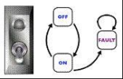
A. Từ TẮT sang BẬT
B. Từ BẬT sang TẮT
C. Chuyển từ LỖI sang BẬT
Câu 287: Chúng ta sử dụng kết quả phân tích yêu cầu và bản đặc tả yêu cầu làm đầu vào để viết: A. User Acceptance Test Cases B. Integration Level Test Cases C. Unit Level Test Cases D. Program specifications |
Câu 288: Cần thực hiện kiểm thử hồi quy: i. Mỗi tuần ii. Sau khi phần mềm đã thay đổi iii. Càng thường xuyên càng tốt iv. Khi môi trường đã thay đổi v. Khi người quản lý dự án nói A. i & ii đúng, iii, iv & v sai B. ii, iii & iv đúng, i & v sai C. ii & iv đúng, i, iii & v sai D. ii đúng, i, iii, iv & v sai |
Câu 289: Việc đánh giá khả năng kiểm thử của các yêu cầu và hệ thống là một phần của giai đoạn nào: A. Phân tích và thiết kế thử nghiệm B. Lập kế hoạch và kiểm soát thử nghiệm C. Triển khai và thực thi kiểm thử D. Đánh giá tiêu chí rút lui và báo cáo |
Câu 290: Phương án nào sau đây có mức độ độc lập cao nhất trong đó các trường hợp thử nghiệm là: A. Được thiết kế bởi những người viết phần mềm đang được kiểm thử. B. Được thiết kế bởi một người từ bộ phận khác C. Được thiết kế bởi một người từ một tổ chức khác. D. Được thiết kế bởi người khác |
Câu 291: Lập kế hoạch kiểm thử có những nhiệm vụ chính nào sau đây? i. Xác định phạm vi và rủi ro, và xác định mục tiêu của việc kiểm thử. ii. Xác định phương pháp kiểm thử (kỹ thuật, các hạng mục kiểm thử, độ bao phủ, xác định và phối hợp các nhóm tham gia kiểm thử, phần mềm kiểm thử). iii. Xem xét lại cơ sở kiểm thử (như yêu cầu, kiến trúc, thiết kế, giao diện) iv. Xác định tiêu chí kết thúc. A. i, ii, iv đúng và iii sai B. i, iv đúng và ii sai C. i, ii đúng và iii, iv sai D. ii, iii, iv đúng và i sai |
Câu 292: Việc quyết định mức độ xét nghiệm nào là đủ cần phải tính đến các yếu tố sau: i. Mức độ rủi ro, bao gồm rủi ro kỹ thuật và rủi ro kinh doanh đối với sản phẩm và dự án ii. Các ràng buộc của dự án như thời gian và ngân sách iii. Quy mô nhóm thử nghiệm iv. Quy mô của nhóm phát triển A. i, ii, iii đúng và iv sai B. i, iv đúng và ii sai C. i, ii đúng và iii, iv sai D. ii, iii, iv đúng và i sai |
Câu 293: Phát biểu nào sau đây là định nghĩa chính xác nhất cho "Kiểm thử"? A. Mục tiêu/mục đích của việc kiểm thử là để chứng minh chương trình hoạt động. B. Mục đích của việc kiểm thử là để chứng minh chương trình không có lỗi. C. Mục đích của việc kiểm thử là để chứng minh chương trình thực hiện đúng chức năng của nó. D. Kiểm thử là việc chạy phần mềm nhằm mục đích tìm ra lỗi. |
Câu 294: Các bài kiểm tra tối thiểu cần thiết cho phạm vi bao phủ báo cáo và phạm vi bao phủ chi nhánh: Read P Read Q If p+q > 100 then Print "Large" End if If p > 50 then Print "pLarge" End if A. Phạm vi bao phủ báo cáo là 2, Phạm vi bao phủ chi nhánh là 2 B. Độ phủ báo cáo là 3 và độ phủ chi nhánh là 2. C. Phạm vi bao phủ báo cáo là 1 và phạm vi bao phủ chi nhánh là 2. D. Phạm vi bảo hiểm báo cáo là 4 và phạm vi bảo hiểm chi nhánh là 2. |
Câu 295: Hãy ghép mỗi giai đoạn của vòng đời phát triển phần mềm với vòng đời kiểm thử: i. Thiết kế cấp cao a. Kiểm thử đơn vị ii. Mã b Kiểm thử chấp nhận iii. Thiết kế cấp thấp c. Kiểm thử hệ thống iv. Yêu cầu nghiệp vụ d. Kiểm thử tích hợp A. i-d, ii-a, iii-c, iv-b B. i-c, ii-d, iii-a, iv-b C. i-b , ii-a , iii-d , iv-c D. i-c, ii-a, iii-d, iv-b |
Câu 296: Hoạt động nào sau đây là một phần của Hoạt động Kết thúc Bài kiểm tra? i. Kiểm tra xem những hạng mục công việc đã được lên kế hoạch nào đã được hoàn thành ii. Phân tích báo cáo lỗi. iii. Hoàn thiện và lưu trữ phần mềm kiểm thử. iv. Phân tích bài học. A. i, ii, iv đúng và iii sai B. i, ii, iii đúng và iv sai C. i, iii, iv đúng và ii sai D. Tất cả các đáp án trên đều đúng |
Câu 297: Mục nào sau đây KHÔNG phải là một phần của kế hoạch kiểm thử cấp cao? A. Các chức năng không cần kiểm tra. B. Yêu cầu về môi trường. C. Phân tích thông số kỹ thuật. D. Tiêu chí nhập cảnh và xuất cảnh. |
Câu 298: Nếu một thí sinh được làm bài kiểm tra gồm 40 câu hỏi, cần đạt 25 điểm để đậu (61%) và cần đạt 80% để đạt loại giỏi, thì hạng tương đương là bao nhiêu? A. 23, 24, 25 B. 0, 12, 25 C. 30, 36, 39 D. 32,37,40 |
Câu 299: Phát biểu nào sau đây đúng về phân tích tĩnh: A. Biên dịch mã không phải là một hình thức phân tích tĩnh. B. Không cần thực hiện phân tích tĩnh trước khi mã lệnh được thực thi. C. Phân tích tĩnh có thể tìm ra các lỗi khó tìm thấy bằng kiểm thử động. D. Không cần phân tích thống kê chuyên sâu nếu thực hiện kiểm thử hộp trắng. |
Câu 300: Trong một hệ thống được thiết kế để tính toán thuế phải nộp: Một nhân viên có 4000 đô la tiền lương được miễn thuế. 1500 đô la tiếp theo bị đánh thuế ở mức 10%. 28000 đô la tiếp theo bị đánh thuế ở mức 22%. Bất kỳ khoản tiền nào vượt quá mức đó đều bị đánh thuế ở mức 40%. Trong số các nhóm số này, nhóm nào sẽ thuộc cùng một lớp tương đương? A. 5800 đô la; 28000 đô la; 32000 đô la B. $0; $200; $4200 C. 5200 đô la; 5500 đô la; 28000 đô la D. 28001 đô la; 32000 đô la; 35000 đô la |
Câu 301: Chi phí đánh giá sẽ không bao gồm. A. Quy trình đánh giá B. Phân tích số liệu C. Hỗ trợ công cụ. D. Cải tiến quy trình. |
Câu 302: Kiểm thử hồi quy luôn bao gồm A. Kiểm tra xem lỗi phần mềm đã biết đã được khắc phục hay chưa. B. Thực hiện một số lượng lớn các bài kiểm tra khác nhau. C. Kiểm tra xem các thay đổi có gây ra tác dụng phụ bất lợi hay không. D. Sử dụng công cụ tự động hóa kiểm thử. |
Câu 303: Các tiện ích ghi hình và phát lại ít có khả năng được sử dụng nhất để _______ A. Performance testing B. Recovery testing C. GUI testing D. User requirements. |
Câu 304: Công cụ nào sẽ được sử dụng để kiểm tra rò rỉ bộ nhớ cờ và con trỏ chưa được gán? A. Dynamic analysis tool B. Static Analysis tool. C. Maintenance tool. D. Configuration tool. |
Câu 305: Độ phức tạp chu trình được sử dụng để tính toán A. Số lượng đường dẫn độc lập trong tập hợp cơ sở của một chương trình B. Số lượng quyết định nhị phân + 1 C. Giới hạn số lượng bài kiểm tra cần thực hiện để đảm bảo tất cả các câu lệnh đã được thực thi ít nhất một lần. D. Số lượng chi nhánh và quyết định |
Câu 306: Mục nào sau đây không được bao gồm trong Kế hoạch Kiểm thử? A. Các tính năng cần kiểm tra. B. Nhu cầu về môi trường. C. Tiêu chí đình chỉ. D. Kết quả dự kiến. |
Câu 307: Chất lượng phần mềm không liên quan đến _______ A. Tính chính xác B. Khả năng sử dụng C. Khả năng tồn tại D. Khả năng tái sử dụng. |
Câu 308: Ghép nối các mục sau: 1. Ước lượng thử nghiệm 2. Kiểm tra điều khiển 3. Giám sát thử nghiệm a. Các biện pháp theo dõi quá trình b. Nỗ lực cần thiết để thực hiện các hoạt động c. Phân bổ lại nguồn lực A. 1-b, 2-c, 3-a B. 1-b, 2-a, 3-c C. 1-c, 2-a, 3-b D. 1-a, 2-b, 3-c |
Câu 309: Khi nào thì ngừng kiểm tra? A. Khi phát hiện đủ số lỗi quy định. B. Khi các tiêu chí hoàn thành bài kiểm tra được đáp ứng. C. Khi tất cả các bài kiểm tra ưu tiên cao và trung bình đã hoàn tất. D. Khi tất cả các câu lệnh đã được thực thi |
Câu 310: Số lượng trường hợp kiểm thử tối thiểu cần thiết để đạt được độ phủ nhánh 100% là bao nhiêu? If(x>y) x=x+1; else y=y+1; while(x>y) { y=x*y; x=x+1; } A. 1 B. 2 C. 3 D. 4 |
Câu 311: Ghép nối các mục sau. 1. Nhận dạng cấu hình 2. Kiểm soát cấu hình 3. Báo cáo tình trạng 4. Kiểm tra cấu hình a. Duy trì các CI trong thư viện b. Kiểm tra nội dung thư viện c. Các vấn đề về ghi và theo dõi chức năng. d. Yêu cầu phải biết tất cả các CI và phiên bản của chúng trong hệ thống. A. 1-d, 2-c, 3-d, 4-a. B. 1-d, 2-a, 3-c, 4-b. C. 1-a, 2-b, 3-d, 4-c. D. 1-c, 2-b, 3-a, 4-d. |
Câu 312: Kiểm thử tích hợp quy mô lớn bao gồm: A. Kiểm tra hệ thống khi kết hợp với các hệ thống khác. B. Kiểm thử một hệ thống con bằng cách sử dụng các stub và driver. C. Kiểm thử hệ thống với số lượng người dùng lớn. D. Kết hợp các thành phần phần mềm và kiểm thử chúng cùng một lúc. |
Câu 313: Một trong những điều sau đây không phải là một phần của thử nghiệm hộp trắng theo tiêu chuẩn BS7925-II. A. Random testing B. Data Flow testing. C. Statement testing. D. Syntax testing. |
Câu 314: Một phần mềm đã được cung cấp _______ những bài kiểm tra nào trong phần sau đây bạn sẽ thực hiện? 1) Kiểm tra các khu vực quan trọng nhất đối với quy trình kinh doanh 2) Kiểm tra các khu vực có khả năng xảy ra lỗi cao nhất. 3) Kiểm tra các chức năng đơn giản nhất A. 1 và 2 đúng, 3 sai. B. 1, 2 và 3 đều đúng. C. 1 đúng, 2 và 3 sai. D. 1 và 2 sai, 3 đúng. |
Câu 315: Loại kiểm thử nào sau đây là kiểm thử phi chức năng? A. Kiểm tra khả năng sử dụng. B. Phạm vi bảo hiểm của báo cáo. C. Kiểm thử luồng dữ liệu. D. Biểu đồ nhân quả. |
Câu 316: Bạn sẽ thực hiện loại kiểm thử nào đối với giải pháp ngân hàng trực tuyến? A. System integration B. Functional testing C. Non-functional testing. D. Requirements testing |
Câu 317: Câu nào sau đây là sai? A. Các sự cố luôn cần được điều tra và giải quyết. B. Sự cố xảy ra khi kết quả mong đợi và kết quả thực tế khác nhau. C. Các sự cố có thể được phân tích để hỗ trợ cải tiến quy trình thử nghiệm. D. Một sự cố có thể được báo cáo dựa trên tài liệu. |
Câu 318: Việc kiểm tra không được thực hiện để ______ A. Tìm lỗi B. Cải thiện chất lượng C. Kiểm tra tính thân thiện với người dùng. D. Cải thiện độ chính xác của phần mềm |
Câu 319: Lỗi xảy ra khi nhiều người dùng truy cập vào hệ thống. Phát biểu nào sau đây là đúng? A. Đây là rủi ro có thể chấp nhận được đối với một hệ thống đa người dùng. B. Việc kiểm tra chức năng chưa được thực hiện đầy đủ. C. Điều này cho thấy một yêu cầu phi chức năng quan trọng chưa được xác định và kiểm tra. D. Không thể kiểm tra các sự kiện như vậy trước khi phát hành. |
Câu 320: Những người không tham gia vào các cuộc đánh giá kỹ thuật A. Các nhà phân tích B. Quản lý C. Các nhà phát triển D. Người kiểm tra |
Câu 321: Thất bại là gì? A. Sự sai lệch giữa kết quả dự kiến và kết quả thực tế B. Lỗi phần mềm. C. Lỗi trong mã chương trình. D. Lỗi trong hệ thống. |
Câu 322: Việc chỉ sử dụng phương pháp kiểm thử hộp trắng trong giai đoạn thử nghiệm sẽ: A. Đảm bảo sản phẩm thử nghiệm được kiểm tra đầy đủ. B. Loại bỏ nhu cầu kiểm thử hộp đen. C. Có nguy cơ các yêu cầu không được đáp ứng. D. Đủ cho giai đoạn kiểm thử đơn vị. |
Câu 323: Yếu tố nào sau đây ít quan trọng nhất trong quản lý kiểm thử? A. Ước tính thời gian kiểm tra. B. Quản lý sự cố. C. Quản lý cấu hình. D. Gỡ lỗi. |
Câu 324: Tiêu chuẩn về thuật ngữ kiểm thử phần mềm là: A. IEEE 802.11 B. ISO 9001 C. BS 7925-1 D. BS 7925-2 |
Câu 325: Đặc điểm nào sau đây KHÔNG phải là đặc điểm của Kiểm thử Chấp nhận Người dùng? A. Sử dụng các công cụ thực thi kiểm thử tự động. B. Thử nghiệm do người dùng thực hiện. C. Kiểm tra dựa trên các tiêu chí kiểm thử chấp nhận. D. Tích hợp hệ thống với tài liệu hướng dẫn người dùng. |
Câu 326: Phương án nào sau đây có tiềm năng tiết kiệm chi phí lớn nhất khi sử dụng CAST? A. Test management B. Test design C. Test planning D. Test execution |
Câu 327: Loại thử nghiệm nào được thực hiện để bổ sung cho quá trình thử nghiệm nghiêm ngặt? A. Regression testing. B. Integration testing. C. Error Guessing D. System testing. |
Câu 328: Để một bài kiểm tra có hiệu quả, điều quan trọng nhất là: A. Việc này rất dễ thực hiện. B. Nó được thiết kế để phát hiện các lỗi nếu có. C. Kết quả mong đợi được xác định trước khi thực thi. D. Việc này khó có thể làm chậm tiến độ. |
Câu 329: Sai lầm khi đoán là: A. Một phương pháp thích hợp để xây dựng các bài kiểm tra hệ thống. B. Chỉ sử dụng khi không có đủ yêu cầu tốt. C. Chỉ sử dụng khi có đủ yêu cầu tốt. D. Phương pháp phù hợp nhất để xây dựng các bài kiểm tra hệ thống. |
Câu 330: Số lượng xét nghiệm được thực hiện sẽ không phụ thuộc vào A. Các rủi ro liên quan B. Yêu cầu hợp đồng C. Các yêu cầu pháp lý D. Dữ liệu thử nghiệm. |
Câu 331: Để phần mềm đáng tin cậy, nó phải: A. Dễ bảo trì. B. Ít có khả năng gây ra sự cố. C. Không bao giờ được phép thất bại trong bất kỳ hoàn cảnh nào. D. Phải được viết theo tiêu chuẩn lập trình. |
Câu 332: Trong một hệ thống được thiết kế để tính toán thuế phải nộp: Một nhân viên có 4000 đô la tiền lương được miễn thuế. 1500 đô la tiếp theo bị đánh thuế ở mức 10%. 28000 đô la tiếp theo bị đánh thuế ở mức 22%. Bất kỳ khoản tiền nào vượt quá mức đó đều bị đánh thuế ở mức 40%. Làm tròn đến $ gần nhất, trường hợp nào sau đây là trường hợp kiểm thử Phân tích Giá trị Biên hợp lệ? A. 1500 đô la B. 32001 đô la C. 28000 đô la D. $33501 |
Câu 333: Các lỗi người dùng phát hiện là do: A. Phần mềm chất lượng kém B. Phần mềm kém chất lượng và quy trình kiểm thử tồi. C. Vận rủi D. Không đủ thời gian để kiểm tra |
Câu 334: Hệ thống ghi nhật ký sự cố A. Chỉ ghi nhận các lỗi B. Có giá trị hạn chế C. Là nguồn thông tin dự án có giá trị trong quá trình thử nghiệm nếu nó chứa tất cả các sự cố. D. Chỉ nên được sử dụng bởi nhóm thử nghiệm. |
Câu 335: Lỗi càng được phát hiện muộn trong chu kỳ phát triển sản phẩm thì chi phí sửa chữa càng cao. Tại sao? A. Tài liệu hướng dẫn kém, nên mất nhiều thời gian hơn để tìm hiểu phần mềm đang làm gì. B. Tiền lương đang tăng lên C. Lỗi đã được tích hợp vào nhiều tài liệu, mã nguồn, bài kiểm tra, v.v. hơn. D. Không có đáp án nào đúng |
Câu 336: Phát biểu nào sau đây là đúng? A. Kiểm thử thành phần nên là kiểm thử hộp đen, kiểm thử hệ thống nên là kiểm thử hộp trắng. B. Nếu bạn tìm thấy nhiều lỗi trong quá trình kiểm thử, bạn không nên quá tự tin về chất lượng phần mềm. C. Càng ít lỗi bạn tìm thấy, quá trình kiểm thử của bạn càng tốt. D. Càng chạy nhiều bài kiểm tra, bạn càng tìm thấy nhiều lỗi. |
Câu 337: Nếu đoạn mã giả dưới đây là một ngôn ngữ lập trình, cần bao nhiêu bài kiểm thử để đạt được độ phủ câu lệnh 100%? 1. If x=3 then 2. Display_messageX; 3. If y=2 then 4. Display_messageY; 5. Else 6. Display_messageZ; 7. Else 8. Display_messageZ; A. 1 B. 2 C. 3 D. 4 |
Câu 338: Các hoạt động kiểm thử phần mềm nên bắt đầu A. Ngay sau khi mã được viết B. Trong giai đoạn thiết kế C. Khi các yêu cầu đã được ghi chép chính thức. D. Càng sớm càng tốt trong chu kỳ phát triển |
Câu 339: Sử dụng ví dụ mã tương tự như câu 17, cần bao nhiêu bài kiểm tra để đạt được độ phủ nhánh/quyết định 100%? A. 1 B. 2 C. 3 D. 4 |
Câu 340: Một kỹ thuật thiết kế bài kiểm tra là A. Quy trình lựa chọn các trường hợp thử nghiệm B. Quy trình xác định kết quả đầu ra mong đợi C. Một phương pháp để đo lường chất lượng phần mềm D. Một cách để đo lường những việc cần phải làm trong kế hoạch kiểm thử. |
Câu 341: Lý do chính để kiểm thử phần mềm trước khi phát hành là gì? A. Để chứng minh rằng hệ thống sẽ hoạt động sau khi phát hành. B. Quyết định khi nào phần mềm đạt chất lượng đủ tốt để phát hành C. Tìm ra càng nhiều lỗi càng tốt trước khi phát hành D. Cung cấp thông tin để đưa ra quyết định dựa trên rủi ro về việc phát hành. |
Câu 342: Phần mềm kiểm thử (các trường hợp kiểm thử, tập dữ liệu kiểm thử) A. Cần quản lý cấu hình giống như yêu cầu, thiết kế và mã nguồn. B. Nên được xây dựng mới cho mỗi phiên bản phần mềm mới. C. Chỉ cần thiết cho đến khi phần mềm được phát hành vào sản xuất hoặc sử dụng. D. Không cần phải được ghi chép và chú thích, vì nó không phải là một phần của hệ thống phần mềm đã phát hành. |
Câu 343: Tiêu chuẩn nào sau đây KHÔNG liên quan đến việc kiểm tra? A. IEEE829 B. IEEE610 C. BS7925-1 D. BS7925-2 |
Câu 344: Các bài kiểm tra nên được thực hiện theo thứ tự nào? A. Các bài kiểm tra quan trọng nhất sẽ được thực hiện trước. B. Tiến hành các bài kiểm tra khó nhất trước (để có tối đa thời gian sửa chữa) C. Làm những bài kiểm tra dễ nhất trước (để tạo sự tự tin ban đầu) D. Thứ tự mà chúng được nghĩ đến |
Câu 345: Một chương trình xác thực một trường số như sau: Các giá trị nhỏ hơn 10 bị loại bỏ, các giá trị nằm giữa 10 và 21 được chấp nhận, các giá trị lớn hơn hoặc bằng 22 bị loại bỏ. Phương án nào sau đây bao phủ nhiều giá trị biên nhất? A. 9,10,11,22 B. 9,10,21,22 C. 10,11,21,22 D. 10,11,20,21 |
Câu 346: Phương án nào sau đây không phải là chiến lược tích hợp? A. Thiết kế dựa trên B. Vụ nổ lớn C. Từ dưới lên D. Từ trên xuống |
Câu 347: Bạn sẽ sử dụng công cụ nào sau đây để phát hiện rò rỉ bộ nhớ? A. State analysis B. Coverage analysis C. Dynamic analysis D. Memory analysis |
Câu 348: Phát biểu nào sau đây là đúng? A. Những lỗi trong đặc tả chương trình là những lỗi tốn kém nhất để khắc phục. B. Các lỗi trong mã lập trình là những lỗi tốn kém nhất để sửa chữa. C. Những sai sót trong yêu cầu là những sai sót tốn kém nhất để khắc phục. D. Những lỗi trong thiết kế là những lỗi tốn kém nhất để khắc phục. |
Câu 349: Việc nâng cao chất lượng phần mềm bằng các phương pháp phát triển tốt hơn sẽ ảnh hưởng đến thời gian cần thiết cho việc kiểm thử (các giai đoạn kiểm thử) như sau: A. Giảm thời gian kiểm tra B. Không thay đổi C. Tăng thời gian kiểm tra D. Không thể nói |
Câu 350: Kỹ thuật thiết kế nào sau đây là kỹ thuật thiết kế hộp đen? A. Statement testing B. Equivalence partitioning C. Error- guessing D. Usability testing |
Câu 351: Khi báo cáo lỗi cho nhà phát triển, người kiểm thử nên: A. Lịch sự, mang tính xây dựng và hữu ích nhất có thể B. Kiên quyết khẳng định rằng lỗi không phải là "tính năng" nếu nó cần được sửa chữa. C. Khéo léo, nhạy cảm với phản ứng của người khác trước những lời chỉ trích. D. Tất cả các đáp án trên |
Câu 352: Phát biểu nào sau đây không đúng? A. Việc kiểm thử hiệu năng có thể được thực hiện trong quá trình kiểm thử đơn vị cũng như trong quá trình kiểm thử toàn bộ hệ thống. B. Kiểm thử chấp nhận không nhất thiết phải bao gồm kiểm thử hồi quy. C. Các hoạt động xác minh không nên có sự tham gia của người kiểm thử (xem xét, kiểm tra, v.v.). D. Môi trường thử nghiệm nên càng giống với môi trường sản xuất càng tốt. |
Câu 353: Tiêu chí quan trọng nào cần xem xét khi quyết định sử dụng kỹ thuật kiểm tra nào? A. Mức độ hiểu biết của bạn về một kỹ thuật cụ thể B. Mục tiêu của bài kiểm tra C. Kỹ thuật này có phù hợp để kiểm thử ứng dụng hay không? D. Liệu có công cụ nào hỗ trợ kỹ thuật này không? |
Câu 354: Khi nào thì nên ngừng kiểm tra? A. Khi thời gian thử nghiệm đã hết. B. Khi tất cả các bài kiểm tra theo kế hoạch đã được thực hiện C. Khi các tiêu chí hoàn thành bài kiểm tra đã được đáp ứng D. Khi các bài kiểm tra không phát hiện ra lỗi nào. |
Câu 355: Đo lường phạm vi phủ sóng A. Không liên quan gì đến việc kiểm tra B. Là một thước đo một phần về mức độ kỹ lưỡng của bài kiểm tra C. Việc bao phủ nhánh (branch coverage) nên là bắt buộc đối với tất cả phần mềm. D. Chỉ có thể áp dụng trong kiểm thử đơn vị hoặc mô-đun, không áp dụng trong kiểm thử hệ thống. |
Câu 356: Loại kiểm thử nào sau đây KHÔNG phải là loại kiểm thử phi chức năng? A. Chuyển đổi trạng thái B. Khả năng sử dụng C. Hiệu suất D. An ninh |
Câu 357: Tiêu chuẩn kiểm tra linh kiện nào sau đây là đúng? A. IEEE 829 B. IEEE 610 C. BS7925-1 D. BS7925-2 |
Câu 358: Một chương trình xác thực một trường số như sau: Các giá trị nhỏ hơn 10 bị loại bỏ, các giá trị nằm giữa 10 và 21 được chấp nhận, các giá trị lớn hơn hoặc bằng 22 bị loại bỏ. Giá trị đầu vào nào sau đây bao phủ tất cả các phân vùng tương đương? A. 10,11,21 B. 3,20,21 C. 3,10,22 D. 10,21,22 |
Câu 359: Điều nào sau đây không đúng - Máy kiểm thử hộp đen A. Phải hiểu được bản đặc tả chức năng hoặc tài liệu yêu cầu. B. Phải hiểu được mã nguồn. C. Có động lực rất cao để tìm ra lỗi. D. Có khả năng sáng tạo để tìm ra điểm yếu của hệ thống. |
Câu 360: Cái nào sau đây là một bài kiểm tra tĩnh? A. Kiểm tra mã B. Phân tích phạm vi bao phủ C. Đánh giá khả năng sử dụng D. Kiểm tra lắp đặt |
Câu 361: Một chương trình có độ phức tạp chu trình cao hầu hết có khả năng là: A. Lớn B. Nhỏ C. Khó viết D. Khó kiểm tra |
Câu 362: Cái nào trong các lựa chọn sau đây là khác biệt? A. Hộp màu trắng B. Hộp kính C. Cấu trúc D. Chức năng |
Câu 363: Kỹ thuật nào sau đây là kỹ thuật hộp đen? A. Kiểm thử chuyển đổi trạng thái, kiểm thử mã, kiểm thử linh hoạt B. Phân vùng tương đương, kiểm thử chuyển trạng thái, kiểm thử bảng quyết định C. Kiểm thử hệ thống, kiểm thử chấp nhận, phân vùng tương đương D. Kiểm thử tích hợp hệ thống, kiểm thử hệ thống, kiểm thử bảng quyết định |
Câu 364: Một số lỗi nghiêm trọng đã được khắc phục trong phần mềm. Tất cả các lỗi đều nằm trong một mô-đun, liên quan đến báo cáo. Người quản lý kiểm thử quyết định chỉ thực hiện kiểm thử hồi quy trên mô-đun báo cáo. A. Người quản lý kiểm thử chỉ nên thực hiện kiểm thử hồi quy tự động. B. Quyết định của người quản lý kiểm thử là hợp lý vì chưa có lỗi nào được khắc phục trong các mô-đun khác. C. Người quản lý kiểm thử chỉ nên thực hiện kiểm thử xác nhận. Không cần thiết phải thực hiện kiểm thử hồi quy. D. Việc kiểm thử hồi quy cũng nên được thực hiện trên các mô-đun khác vì việc sửa lỗi ở một mô-đun có thể ảnh hưởng đến các mô-đun khác. |
Câu 365: Phát biểu nào sau đây chứa mục tiêu hợp lệ cho một tập hợp kiểm thử chức năng? A. Mục tiêu là không để xảy ra thêm lỗi nào do các khiếm khuyết còn lại gây ra. B. Mục tiêu là tìm ra càng nhiều lỗi càng tốt để có thể xác định và khắc phục nguyên nhân gây ra lỗi. C. Mục tiêu là loại bỏ càng nhiều càng tốt các nguyên nhân gây ra khuyết điểm. D. Mục tiêu là đáp ứng tất cả các yêu cầu kiểm thử được xác định trong kế hoạch dự án. |
Câu 366: Điều gì làm cho việc kiểm tra khác với các loại đánh giá khác? A. Được dẫn dắt bởi một người lãnh đạo được đào tạo, sử dụng các tiêu chí đầu vào và đầu ra chính thức cùng với danh sách kiểm tra. B. Được dẫn dắt bởi tác giả của tài liệu cần được kiểm tra. C. Nó chỉ có thể được sử dụng để xem xét thiết kế và mã nguồn. D. Phương pháp này do tác giả dẫn dắt, sử dụng danh sách kiểm tra và thu thập dữ liệu để cải tiến. |
Câu 367: Tại sao phân tích giá trị biên lại cung cấp các trường hợp thử nghiệm tốt? A. Vì đó là tiêu chuẩn ngành. B. Vì lỗi thường xuyên xảy ra trong quá trình lập trình các trường hợp khác nhau gần "các cạnh" của phạm vi giá trị. C. Bởi vì chỉ những lớp tương đương có cùng chức năng mới được xem xét trong các trường hợp thử nghiệm. D. Vì vật thử được kiểm tra dưới tải trọng tối đa đến giới hạn hiệu suất của nó. |
Câu 368: Nếu một chương trình được kiểm thử và đạt được độ phủ nhánh 100%, thì tiêu chí độ phủ nào sau đây được đảm bảo sẽ đạt được? A. Độ phủ lớp tương đương 100%. B. Độ phủ điều kiện 100% và độ phủ câu lệnh 100%. C. Độ phủ câu lệnh 100%. D. Độ phủ đa điều kiện 100%. |
Câu 369: Một hệ thống quản lý lỗi phải theo dõi trạng thái của mọi lỗi đã được ghi nhận và thực thi các quy tắc về việc thay đổi các trạng thái này. Nếu nhiệm vụ của bạn là kiểm tra việc theo dõi trạng thái, phương pháp nào sẽ là tốt nhất? A. Kiểm tra dựa trên logic B. Kiểm thử dựa trên trường hợp sử dụng C. Kiểm tra chuyển đổi trạng thái D. Thử nghiệm có hệ thống theo mô hình V |
Câu 370: Trong kiểm thử hệ thống... A. Cả yêu cầu chức năng và phi chức năng đều phải được kiểm tra. B. Chỉ các yêu cầu chức năng được kiểm thử; các yêu cầu phi chức năng được xác nhận trong quá trình xem xét. C. Chỉ các yêu cầu phi chức năng được kiểm thử; các yêu cầu chức năng được xác nhận trong quá trình xem xét. D. Chỉ những yêu cầu được liệt kê trong tài liệu đặc tả mới được kiểm tra. |
Câu 371: Kiểm thử tích hợp có những đặc điểm sau: I. Việc này có thể được thực hiện từng bước một. II. Việc này luôn được thực hiện sau khi kiểm tra hệ thống. III. Nó bao gồm các bài kiểm tra chức năng IV. Nó bao gồm các bài kiểm tra không liên quan đến chức năng A. I, II và III đều đúng B. Tôi đúng C. I, III và IV đều đúng D. I, II và IV đều đúng. |
Câu 372: Hoạt động nào sau đây phân biệt một buổi kiểm tra thực tế với một buổi đánh giá chính thức? A. Quá trình kiểm tra không tuân theo một quy trình xác định. B. Đối với buổi đánh giá tổng quan, việc chuẩn bị cá nhân của người đánh giá là tùy chọn. C. Buổi đánh giá tổng quan yêu cầu phải có sự gặp gỡ. D. Quá trình kiểm tra thực tế giúp tìm ra nguyên nhân gây ra lỗi, trong khi quá trình đánh giá chính thức giúp tìm ra các lỗi. |
Câu 373: Tại sao việc kiểm tra là cần thiết? A. Vì kiểm thử là phương pháp tốt để đảm bảo phần mềm không có lỗi. B. Vì việc xác minh và thẩm định là chưa đủ để biết được chất lượng của phần mềm. C. Vì việc kiểm thử đo lường chất lượng của hệ thống phần mềm và giúp nâng cao chất lượng. D. Vì thử nghiệm phát hiện ra nhiều lỗi hơn so với việc xem xét và kiểm tra. |
Câu 374: Trong chương trình học cơ bản, bạn sẽ tìm thấy các nguyên tắc cơ bản chính của việc kiểm tra. Câu nào sau đây mô tả một trong những nguyên tắc cơ bản đó? A. Việc kiểm thử phần mềm toàn diện là hoàn toàn khả thi nếu bạn có đủ nguồn lực và công cụ kiểm thử. B. Với phương pháp kiểm thử tự động, bạn có thể đưa ra nhận định về chất lượng sản phẩm với độ tin cậy cao hơn so với phương pháp kiểm thử thủ công. C. Đối với một hệ thống phần mềm, trong điều kiện bình thường, không thể kiểm tra tất cả các tổ hợp đầu vào và đầu ra. D. Mục tiêu của việc kiểm thử là để chứng minh phần mềm không có lỗi. |
Câu 375: Phát biểu nào sau đây là đúng? A. Kiểm thử cũng giống như đảm bảo chất lượng. B. Kiểm thử là một phần của đảm bảo chất lượng. C. Việc thử nghiệm không phải là một phần của đảm bảo chất lượng. D. Kiểm thử cũng giống như gỡ lỗi |
Câu 376: Đoạn chương trình sau đây được cho: WHILE (condition A) Do B END WHILE Cần kiểm thử bao nhiêu quyết định trong đoạn mã này để đạt được độ bao phủ quyết định 100%? A. 2 B. Không xác định C. 1 D. 4 |
Câu 377: Trong một hệ thống đặt vé máy bay, số lượng chỗ ngồi còn trống trên mỗi loại máy bay là một đầu vào. Một máy bay có thể có bất kỳ số lượng chỗ ngồi còn trống nào, tối đa bằng sức chứa của máy bay. Sử dụng phân tích giá trị biên (Boundary Value analysis), một danh sách các giá trị chỗ ngồi còn trống đã được tạo ra. Danh sách nào sau đây là đúng? A. 1, 2, dung lượng -1, dung lượng, dung lượng cộng 1 B. 0, 1, dung lượng, dung lượng cộng 1 C. 0, 1, 2, dung lượng cộng 1, một số rất lớn D. 0, 1, 10, 100, dung lượng, dung lượng cộng một |
Câu 378: Tập hợp các lớp tương đương nào sau đây là hợp lệ cho bài toán sau: Một trường số nguyên phải chứa các giá trị từ 1 đến 15 (bao gồm cả 15) A. Ít hơn 1, từ 1 đến 15, hơn 15 B. Các số âm, từ 1 đến 15, lớn hơn 15 C. Nhỏ hơn 1, từ 1 đến 14, lớn hơn 15 D. Nhỏ hơn 0, từ 1 đến 14, 15 trở lên |
Câu 379: Phát biểu nào sau đây là đúng về các công cụ phân tích tĩnh A. Chúng giúp bạn tìm ra các khiếm khuyết thay vì lỗi. B. Chúng chỉ được các nhà phát triển sử dụng. C. Chúng yêu cầu biên dịch mã. D. Chúng chỉ hữu ích cho các ngành công nghiệp được quản lý chặt chẽ. |
Câu 380: Điều nào sau đây thường được coi là lỗi giao diện của các thành phần? A. Đối với hai thành phần trao đổi dữ liệu, một thành phần sử dụng đơn vị đo lường hệ mét, thành phần còn lại sử dụng đơn vị đo lường hệ Anh. B. Hệ thống khó sử dụng do cấu trúc đầu vào thiết bị đầu cuối quá phức tạp. C. Thông báo lỗi nhập liệu của người dùng gây hiểu nhầm và không hữu ích trong việc hiểu nguyên nhân lỗi nhập liệu. D. Khi hệ thống hoạt động ở mức tải cao, hệ thống không cung cấp đủ cổng mở để kết nối. |
Câu 381: Phát biểu nào sau đây là đúng về các công cụ phân tích tĩnh? A. Các công cụ phân tích tĩnh chỉ được sử dụng bởi các nhà phát triển. B. Trình biên dịch có thể hỗ trợ một số chức năng phân tích tĩnh. C. Các công cụ phân tích tĩnh giúp tìm ra lỗi thay vì khiếm khuyết. D. Các công cụ phân tích tĩnh yêu cầu thực thi mã để phân tích độ phủ mã. |
Câu 382: Danh sách nào sau đây chỉ chứa các bài kiểm tra không liên quan đến chức năng? A. Kiểm thử khả năng tương tác (tương thích), độ tin cậy và hiệu năng. B. Kiểm thử hệ thống và kiểm thử hiệu năng. C. Kiểm thử tải, kiểm thử chịu tải, kiểm thử thành phần và kiểm thử tính khả chuyển. D. Kiểm thử các cấu hình khác nhau, kiểm thử beta và kiểm thử tải. |
Câu 383: Tập hợp các chỉ số nào có thể được sử dụng để giám sát quá trình thực thi kiểm thử? A. Số lượng lỗi được phát hiện, chi phí kiểm tra; B. Số lượng khuyết tật còn lại trên vật mẫu thử. C. Tỷ lệ phần trăm các nhiệm vụ đã hoàn thành trong quá trình chuẩn bị môi trường thử nghiệm; các trường hợp thử nghiệm đã được chuẩn bị D. Số lượng trường hợp kiểm thử đã chạy/chưa chạy; trường hợp kiểm thử đã vượt qua/thất bại |
Câu 384: Những mục kiểm thử nào nên được đưa vào quản lý cấu hình? A. Đối tượng thử nghiệm, vật liệu thử nghiệm và môi trường thử nghiệm B. Báo cáo sự cố và tài liệu kiểm tra C. Chỉ đối tượng kiểm thử. Các trường hợp kiểm thử cần được điều chỉnh trong quá trình kiểm thử linh hoạt. D. Đối tượng kiểm thử và tài liệu kiểm thử. |
Câu 385: Đoạn chương trình sau đây được cho: WHILE (condition A) Do B END WHILE Cần kiểm tra bao nhiêu đường dẫn trong đoạn mã này để đạt được độ phủ đường dẫn 100%? A. Một B. Không xác định C. Hai D. Bốn |
Câu 386: Mục đích của tiêu chí kết thúc kiểm thử trong kế hoạch kiểm thử là gì? A. Xác định thời điểm dừng hoạt động thử nghiệm B. Thiết lập các tiêu chí được sử dụng để tạo ra dữ liệu đầu vào thử nghiệm C. Để đảm bảo rằng đặc tả trường hợp thử nghiệm được đầy đủ. D. Để biết khi nào một bài kiểm tra cụ thể đã hoàn tất quá trình thực thi. |
Câu 387: Nếu một chương trình được kiểm thử và đạt được độ bao phủ điều kiện 100%, thì tiêu chí bao phủ nào sau đây được đảm bảo sẽ đạt được? A. Độ phủ nhánh 100%. B. Độ phủ điều kiện 100% và độ phủ câu lệnh 100%. C. Độ phủ lớp tương đương và giá trị biên. D. Không có tiêu chí độ phủ hộp trắng nào khác được bảo đảm đạt 100%. |
Câu 388: Nguyên nhân nào sau đây có thể là nguyên nhân gốc rễ của lỗi trong một sản phẩm phần mềm? (I) Dự án có quy trình quản lý cấu hình chưa hoàn chỉnh. (II) Tiến độ thời gian phát triển một thành phần nhất định đã bị rút ngắn. (III) thông số kỹ thuật không rõ ràng (IV) Việc sử dụng tiêu chuẩn mã không được theo dõi (V) Những người thử nghiệm không được chứng nhận A. (I) và (II) đều đúng B. (I) đến (IV) đều đúng C. (III) đến (V) là đúng D. (I), (II) và (IV) đều đúng |
Câu 389: Danh sách sau đây chứa các rủi ro đã được xác định đối với một sản phẩm phần mềm sắp được phát triển. Rủi ro nào trong số này là một ví dụ về rủi ro sản phẩm? A. Không đủ người kiểm thử đủ trình độ để hoàn thành các bài kiểm thử theo kế hoạch. B. Việc bàn giao phần mềm bị chậm tiến độ. C. Đe dọa đến tính mạng bệnh nhân D. Nhà cung cấp bên thứ ba không cung cấp hàng hóa như đã quy định. |
Câu 390: Phát biểu nào sau đây là đúng? A. Công cụ phân tích tĩnh tạo ra số liệu thống kê trong khi chương trình chạy. B. Hệ thống quản lý cấu hình cho phép cung cấp số liệu thống kê lỗi chính xác cho từng cấu hình. C. Công cụ kiểm thử mức tải cao xem xét hành vi của đối tượng kiểm thử ở mức tải tối đa hoặc vượt mức đó. D. Công cụ đo hiệu năng có thể được sử dụng ở mọi giai đoạn của vòng đời phần mềm. |
Câu 391: Những yếu tố đầu vào nào sau đây của dự án ảnh hưởng đến việc kiểm thử? (I) Yêu cầu hợp đồng (II) Yêu cầu pháp lý (III) Tiêu chuẩn ngành (IV) Rủi ro ứng dụng (V) Quy mô dự án A. (I) đến (III) đều đúng B. Tất cả các phương án đều đúng C. (II) và (V) là đúng D. (I), (III) và (V) là đúng |
Câu 392: Một kỹ sư kiểm thử đang kiểm tra một đầu phát video (VCR) và ghi lại báo cáo sau: Tiêu đề: Chức năng tua nhanh dừng lại sau 2 phút. Điều này xảy ra mỗi lần. Kết quả mong đợi: Tua nhanh tiếp tục đến hết băng. Mức độ nghiêm trọng: Cao Mức độ ưu tiên: Khẩn cấp Kỹ sư đã bỏ sót thông tin quan trọng nào? A. Nhận dạng (phần mềm và phần cứng) của đầu ghi video (VCR) B. Kết quả thực tế C. Lịch sử của báo cáo D. Các ý tưởng cải tiến trường hợp thử nghiệm |
Câu 393: Kiểm tra bảo trì là: A. Quản lý thử nghiệm B. Từ đồng nghĩa với việc kiểm tra chất lượng dịch vụ C. Được kích hoạt bởi các thay đổi, di chuyển hoặc ngừng sử dụng phần mềm hiện có. D. Kiểm tra mức độ bảo trì của nhà cung cấp. |
Câu 394: Tại sao phương pháp tích hợp gia tăng được ưa chuộng hơn phương pháp tích hợp "đột phá"? A. Vì tích hợp gia tăng có khả năng sàng lọc và cô lập lỗi sớm tốt hơn. B. Vì tích hợp "bùng nổ" chỉ phù hợp với các ứng dụng thời gian thực. C. Tích hợp gia tăng chỉ được ưu tiên hơn tích hợp "bùng nổ" đối với mô hình phát triển "từ dưới lên". D. Bởi vì việc tích hợp từng bước có thể bù đắp cho việc kiểm thử thành phần yếu kém và không đầy đủ. |
Câu 395: Mô hình V là: A. Một mô hình phát triển phần mềm minh họa cách các hoạt động kiểm thử tích hợp với các giai đoạn phát triển phần mềm. B. Một mô hình vòng đời phần mềm không liên quan đến việc kiểm thử C. Mô hình vòng đời phát triển và kiểm thử phần mềm chính thức của ISTQB D. Mô hình vòng đời kiểm thử bao gồm các giai đoạn kiểm thử đơn vị, tích hợp, hệ thống và nghiệm thu |
Câu 396: Mục nào sau đây không cần phải được ghi trong báo cáo sự cố? A. Số phiên bản của đối tượng kiểm thử B. Dữ liệu thử nghiệm và môi trường sử dụng C. Xác định trường hợp kiểm thử bị lỗi D. Vị trí và hướng dẫn cách khắc phục lỗi |
Câu 397: Lập kế hoạch dữ liệu thử nghiệm về cơ bản bao gồm: A. Mạng B. Mô hình vận hành C. Phân tích giá trị biên D. Lập kế hoạch quy trình thử nghiệm |
Câu 398: Kiểm thử chấp nhận có nghĩa là gì? A. Kiểm thử được thực hiện trên một mô-đun hoặc đơn vị mã độc lập. B. Kiểm thử sau khi đã thực hiện các thay đổi để đảm bảo không có thay đổi không mong muốn nào được đưa vào. C. Kiểm thử để đảm bảo hệ thống đáp ứng nhu cầu của tổ chức và người dùng cuối. D. Người dùng kiểm thử ứng dụng trong môi trường của nhà phát triển. |
Câu 399: Việc kiểm thử _______ nên bao gồm các bài kiểm thử vận hành của môi trường mới cũng như của phần mềm đã được thay đổi. A. System Testing B. Integration testing C. Component testing D. Maintenance testing |
Câu 400: Phương pháp tiếp cận dựa trên rủi ro trong thử nghiệm cung cấp các cơ hội chủ động để giảm mức độ rủi ro của sản phẩm, bắt đầu từ giai đoạn đầu của dự án. A. Đúng B. Sai |
Câu 401: Kiểm thử chức năng chủ yếu là A. Kỹ thuật xác thực B. Kỹ thuật xác minh C. Cả hai đáp án trên D. Không có đáp án nào đúng |
Câu 402: Phạm vi phủ sóng chi nhánh A. Một tên gọi khác cho phạm vi quyết định B. Tên gọi khác của phạm vi phủ sóng toàn bộ các cạnh C. Tên gọi khác của phạm vi bao phủ đường dẫn cơ bản D. Tất cả các đáp án trên |
Câu 403: _________ là hoạt động trong đó các mục tiêu kiểm thử tổng quát được chuyển đổi thành các điều kiện kiểm thử và thiết kế kiểm thử cụ thể. A. Testing Planning B. Test Control C. Test analysis and design D. Test implementation |
Câu 404: Kiểm thử tích hợp trong đó không có kiểm thử gia tăng nào được thực hiện trước khi tất cả các thành phần của hệ thống được kết hợp để tạo thành hệ thống hoàn chỉnh. A. System testing B. Component Testing C. Incremental Testing D. Big bang testing |
Câu 405: Kỹ thuật thiết kế trường hợp kiểm thử cho một thành phần mà trong đó các trường hợp kiểm thử được thiết kế để thực thi các câu lệnh được gọi là gì? A. State transition Testing B. Static Testing C. Transition testing D. Statement testing |
Câu 406: Ai nên có kiến thức chuyên môn về kỹ thuật và kinh doanh? A. Người điều phối B. Tác giả C. Người đánh giá D. Máy ghi âm |
Câu 407: Kế hoạch kiểm thử định nghĩa như sau: A. Cái gì được chọn để thử nghiệm? B. Mục tiêu và kết quả C. Kết quả dự kiến D. Mục tiêu và thất bại |
Câu 408: Việc kiểm thử tích hợp linh kiện có thể được thực hiện A. Before Integration testing B. After unit testing C. After component testing D. After system testing |
Câu 409: Tài liệu cơ sở kiểm thử được phân tích ở giai đoạn nào của quá trình kiểm thử? A. Test Analysis B. Test Design C. Test Execution D. Test Planning |
Câu 410: Nhiệm vụ nào sau đây không phải là nhiệm vụ của người lãnh đạo nhóm kiểm tra? A. Phối hợp chiến lược và kế hoạch kiểm thử với các quản lý dự án và những người khác. B. Quyết định về việc triển khai môi trường kiểm thử. C. Viết báo cáo tóm tắt kết quả kiểm tra D. Xem xét và đóng góp vào kế hoạch kiểm thử |
Câu 411: if (condition1 && (condition2 function1())) statement1; else statement2; A. Decision coverage B. Condition coverage C. Statement coverage D. Path Coverage |
Câu 412: Các buổi đánh giá _________ thường chỉ có lập trình viên viết mã và một hoặc hai lập trình viên hoặc người kiểm thử khác tham gia. A. Đánh giá chính thức B. Đánh giá ngang hàng C. Đánh giá bán chính thức D. Tất cả các đáp án trên |
Câu 413: Trong ________ kiểm thử, các trường hợp kiểm thử, tức là dữ liệu đầu vào cho phần mềm, được tạo ra dựa trên các ngôn ngữ đặc tả. A. State Transition Testing B. Random Testing C. Syntax Testing D. Penetration testing |
Câu 414: Kiểm thử hộp trắng A. Tương tự như thử nghiệm trong hộp kính B. Tương tự như thử nghiệm hộp trong suốt C. Cả A và B. D. Không có đáp án nào đúng. |
Câu 415: Các hoạt động kiểm chứng trong giai đoạn thiết kế là gì? A. Xem xét và kiểm tra B. Kiểm tra và thử nghiệm C. Xem xét và kiểm tra D. Rà soát, kiểm tra và thử nghiệm. |
Câu 416: Phân vùng tương đương bao gồm nhiều hoạt động khác nhau: A. Đảm bảo rằng các trường hợp kiểm thử kiểm tra từng lớp tương đương đầu vào và đầu ra ít nhất một lần. B. Xác định tất cả các đầu vào và tất cả các đầu ra. C. Xác định các lớp tương đương cho mỗi đầu vào D. Tất cả các đáp án trên |
Câu 417: Phân tích tĩnh A. Tương tự như kiểm thử tĩnh B. Do các nhà phát triển thực hiện C. Cả A và B D. Không có đáp án nào đúng |
Câu 418: Quy mô của một dự án được xác định dựa trên tất cả các yếu tố sau đây, ngoại trừ... A. Ngày công của người B. Số giờ làm việc của nhân viên C. Các tháng trong năm D. Không có đáp án nào đúng |
Câu 419: Trách nhiệm kiểm thử: Người kiểm thử 1: Kiểm tra chương trình hiển thị hình ảnh rõ trên cả 10 màn hình trong phòng thí nghiệm. Người kiểm thử 2: Kiểm tra hướng dẫn sử dụng chương trình có dễ hiểu hay không. Người kiểm thử 3: Kiểm tra mô-đun tính toán bằng cả kịch bản kiểm thử và kiểm thử tùy hứng. Thuật ngữ nào chỉ hoạt động kiểm thử do người kiểm thử 3 thực hiện? A. Unit testing B. Algorithm specific testing C. Compatibility testing D. Black box testing |
|||